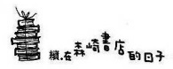

「貴子，好久不見了！怎麼我好像有種浦島太郎的感覺呀。」
站在書店前等候的桃子嬸嬸一看到我就這麼說，然後哈哈大笑。響亮的笑聲貫穿了整條二手書店小巷。由於她一副若無其事、滿不在乎的態度，反倒讓我有些莫名其妙地感覺很不自在。
是的，她真的回來了。看到眼前的桃子嬸嬸，我才開始進入狀況。不對，應該說之前早已聽聞，所以頭腦裡有所理解，可是直到親眼目睹為止，心中還是半信半疑。就好像聽見朋友說看到鬼時一樣的感覺。
然而桃子嬸嬸真的就出現在我的眼前，而且很開心的樣子。這是怎麼回事，居然能表現得如此開朗？這是五年來行蹤不明、突然間又跑回來的人該有的態度嗎？另一方面，站在她旁邊的悟叔則像是吃到腐敗食物的狗一樣，滿臉苦澀地愣在那裡。這下豈不是兩人的立場對調了嗎？
「幹麼一副好像見到鬼的樣子，真是太過分了！」
桃子嬸嬸對著一句話都說不出來的我露出不滿的神色。
我差點都要回說「如果真的是見到鬼，我還不會如此驚訝呢」，好不容易把話吞進肚子裡改口回應，「桃子嬸嬸，妳看起來氣色不錯嘛」。我上一次見到她人，已經是十年前的事了。
桃子嬸嬸年輕時很漂亮，雖然稱不上是令人驚豔的大美女，但還是有引人注目的魅力，應該說就像是在海邊看到價格不高卻閃閃發光的石頭一樣吧。親戚聚會時，她姿勢端正地跪坐在最不起眼的角落，令我印象深刻（桃子嬸嬸的身材很嬌小）。看在小孩子的我的眼裡，甚至有種神祕的氣息。
上了年紀的桃子嬸嬸依然很漂亮。身穿淡褐色的毛衣，搭配藍色牛仔褲，顯得很簡單素淨，臉上幾乎未施脂粉。但因為豐富多變的表情、挺直的背脊和生動活潑的說話方式，讓她看起來年輕許多。而且與其說她上了年紀，倒不如說她猶如脫胎換骨般、去掉了一些多餘的東西似乎更恰當些。
總之充滿活力的她一點也看不出是離家出走多年又突然回來的人，反倒是悟叔不但有些駝背，身上的衣服破破爛爛，頭髮也亂蓬蓬的，活脫像個糟老頭。
「貴子都已經長這麼大了，完全像是個大小姐一樣。」桃子嬸嬸瞇起眼睛仔細地端詳我。「上次公公葬禮時，妳還只是個高中生呀，感覺好像昨天才剛發生過似地。」
那是在一個天氣晴朗的秋日傍晚時分，我和桃子嬸嬸、悟叔三人就這樣子在森崎書店前湊在一起。
那傢伙回來了！
悟叔在兩天前興奮地打電話給我，距離我離開森崎書店已經過了一年半的時間。
結束在書店的長期休假後，我開始在一間小型設計公司上班。三個月前才從臨時雇員晉升為正式員工。因為生活忙碌，已經有兩個月沒去書店看悟叔了。所以接到悟叔來電時，單純以為他是催我過去玩的，然而一聽到悟叔興奮的說話聲音，我就知道事情非同小可。
悟叔在電話裡說明情況，巨細靡遺的描述方式聽得我頗為焦急，長達兩個小時的電話內容簡單摘要如下──
那一天跟平常日子沒兩樣，悟叔從早到晚在神保町開店做生意，由於中午賣出了森鷗外和織田作之助的稀有書，那天的收入算是不錯，因此悟叔一直到晚上心情都很好，最後還一邊吹著口哨一邊準備打烊。這時有人悄悄地推開書店大門走了進來。
悟叔心想，咦，都這麼晚了，居然還有客人上門。但他依舊背對著門繼續進行打烊的作業。那個客人始終沒有走進店裡面，而是屏著氣站在門前不動。真是奇怪的客人！悟叔納悶地正要回頭時，客人突然低喃了一句話。一聽到那聲音，悟叔形容那衝擊就像是「頭部遭到鈍器重重一擊般」。
起初以為是自己聽錯了，但另一方面又很清楚自己不可能聽錯。聽錯那聲音的可能性，就跟一下子有一百個客人擠進森崎書店一樣微乎其微。
對著身體幾乎僵硬的悟叔背後，對方又用比較明確的聲音說話。
「阿悟……」
深呼吸一口氣後，悟叔才轉身看著說話的人。
店內熟悉的景色瞬間往後倒退，悟叔眼中只剩下站在中間的身影。那是五年前離家出走，直到一分鐘前還行蹤不明的妻子身影。悟叔的目光無法從她的身上移開，彷彿自己正在作夢。因為同樣的夢境，他已做過不下幾百回。可是以夢境來說，這一次對方的存在未免也太具有真實感。樣子跟離家出走前差不多的桃子確實就站在那裡。
經過很長的沉默之後，桃子臉上浮現微笑說：「我回來了。」
那語氣宛如只是出門散個步回來一樣，就連行李也只有她一隻手上提著的小包包而已。
悟叔的眼睛一直凝視著她，好不容易才開口回應，「歡迎妳回來。」
桃子沒有多說什麼，靜靜地爬上二樓的房間。從此她就住在書店的二樓。
「慢點慢點慢點……」
到此為止就連始終耐著性子聽電話的我也超過了忍耐的限度。
「這算什麼嘛！說什麼『我回來了』、『歡迎妳回來』，還有什麼『從此就住下來』！你好像是在說怪談故事吧？」
悟叔卻態度很認真地回答：「我說的都是真的，貴子。」
「如果是真的，那你們兩人都是怪咖！嬸嬸為什麼會那麼唐突地回家呢？悟叔又為什麼一點也不生氣地接納了她呢？」
「這一點我也覺得很不思議。」悟叔用憨儍的聲音充滿感慨地說：「反正自然而然就變成了那樣。」
我驚訝地一句話也說不出來。的確，悟叔的行為有些異於常人，但這一次他們夫妻倆可說是半斤八兩。
「該不會那之後你也什麼都沒問過嬸嬸吧？」
聽到我語重心長地詢問，悟叔一副沒什麼大不了的口吻回答：「嗯，總覺得不好開口問。」
「真是受不了你耶！那你就把人帶回國立的家，好好地問個仔細不就結了？」
「她說那裡住不慣不喜歡，還是書店的二樓比較好。貴子，我真的是一點都不懂女人心。為什麼那傢伙會回來呢？」
悟叔在電話那頭發出困惑的心聲，可是我卻冷冷地反嗆回去，「這種事我哪會知道！既然她是你老婆，當然是悟叔比較清楚才對吧？」
「我也以為自己比誰都清楚呀。可是現在卻很錯亂，簡直就像是瞎子摸象一樣。因為妳是女生，有些事還是同性之間比較了解吧？」
「的確我們的性別一樣，但我想就生物的種類而言，那就大不相同了。」
聽我這麼說，悟叔短暫地沉默了一下後，冷不防又低聲問：「我說……貴子呀……會不會……那傢伙哪一天又離家出走呢？」
悟叔充滿真誠的聲音，不禁讓我有些痛心。我想起了那一次我們叔姪倆走在夜路、提起桃子嬸嬸時，他那寂寞的背影。沒錯，不管嘴裡怎麼說，其實直到現在悟叔還深愛著桃子嬸嬸，也因為那樣才會如此痛苦。可以的話，我不想再看到那樣的背影。
「悟叔不希望嬸嬸離開嗎？」
「我不知道。以前覺得不管她人在哪裡，只要過得幸福就好；如今她回來了，我的心情卻變得不一樣。我不是慶幸桃子過得不幸福……唉！我真是個傲慢的傢伙。」
不行不行，這樣下去沒完沒了，我只好狠下心打斷反問：「所以呢？你要拜託我什麼嗎？」
「嗄？妳怎麼知道我有事要拜託妳？」
「當然知道，也不想想我和悟叔在一起的時間有多久了。」
「貴子，這世界上再也沒有像妳這麼棒的姪女了！悟叔會感激妳的。」
大致的情形就是這樣子，悟叔要拜託我的事就是去探詢桃子嬸嬸的心意。為什麼事到如今還回來？今後有什麼打算？五年前桃子嬸嬸離家時只留下寫著「我一個人沒問題，請不要來找我」的紙條，幾乎沒有帶任何行李走。因為當時悟叔完全感受不到任何的預兆和原因，所以他也不知道下一次會發生什麼情形。
各種念頭錯綜複雜地在腦海中翻騰，最後十分苦惱的悟叔只能遵照著留言的交代沒有去找人，也沒有報警申請搜索。
「一方面因為我們夫妻沒有生小孩，而且那傢伙也很喜歡貴子，所以我想妳去問的話，她應該會對妳說。」悟叔最後又補上理由，然後說聲「那就拜託妳了」，便掛上電話。
桃子嬸嬸喜歡我？即便我們之間根本沒說過幾次話嗎？我總覺得有些莫名其妙。夫妻之間的事要我一個第三者出面介入，基本上就很抗拒。只是聽到悟叔悲傷的聲音，我又如何能夠拒絕呢？不管怎麼說，悟叔對我而言，是我一生中很重要的恩人啊！
「總之先進去吧，我們之間可有很多話要說呀！」
原本站在門口的我們，在桃子嬸嬸的催促下走進了店裡。我已經有兩個月沒踏進這裡了。
店裡依然書滿為患，每走一步，地板就發出傾軋的聲響。夕陽柔和的光線從窗外照進來，光影中有塵埃慢慢飛舞。我用力深呼吸，讓胸腔充滿這店裡久違的空氣。
還記得第一次造訪時皺著眉頭抱怨「好臭」，惹得悟叔露出哭笑不得的情景，如今卻深深愛上這充塞在舊書間的霉臭味，真是不可思議。
我們三人坐在櫃檯前吃著鯛魚燒，那是我在來的路上買的伴手禮。享用的時候，有兩度客人上門。看到我們像老鼠開會一樣圍坐在一起，客人們先是有些驚訝，卻還是買了書才走。桃子嬸嬸代替悟叔親切地招呼客人，不愧是長年身為二手書店的老闆娘，一副很熟悉的樣子。
進來書店之後，幾乎也都是桃子嬸嬸一個人在講話。她說話的方式就像是失控的飛機一樣，根本沒有脈絡可循。
是哦，原來貴子也住過這裡呀，就跟我現在一樣。冷氣一點都不涼，所以夏天應該很熱吧？唉呀，這個鯛魚燒連尾巴都塞滿了紅豆餡，好好吃喔。哪裡買的？這附近比起從前變了很多，多了許多漂亮的店。啊，我說漂亮的店真是太落伍了，現在都說是時髦啦。
就像這樣話題不停轉變，而且不知道為什麼，說話的同時桃子嬸嬸還會動不動就捏一下悟叔的臉頰。由於捏太多次了，悟叔的臉頰都被捏紅了。
「為什麼嬸嬸從剛才起就一直在捏悟叔的臉頰呢？」因為那樣子實在太奇妙了，我不禁吃驚地插嘴問。
「什麼？我捏他了嗎？」桃子嬸嬸睜大眼睛反問。
「妳捏了呀。」
「噢，那是我從以前就有的習慣，喜歡捏別人的臉頰。只要親近的人，自然就動手捏一下。應該算是一種表現情意的方法吧。不過說起阿悟被捏時的表情，妳不覺得很可愛嗎？」說完又用雙手用力捏著悟叔的雙頰，像處罰小朋友一樣上下左右地搖晃。悟叔只是露出很悲哀的神情，談不上是可愛。
「快放手啦……」
雙頰被捏住不放的悟叔發出痛苦的聲音，不過大概早就習慣了吧，感覺有一半的語氣混雜了已經放棄掙扎的味道。桃子嬸嬸看到悟叔的反應更是哈哈大笑，這才放開了他。搞不好桃子嬸嬸有虐待狂的傾向。
「在貴子面前這樣很丟臉。」
「咦，有什麼關係呢？又不是外人，貴子是我們的姪女呀。」
「這樣會喪失身為長輩的尊嚴啊。」
聽到悟叔這麼說，嬸嬸立刻嚴厲地反擊，「你這個人從來就沒有過什麼尊嚴。」
如果感情夠好，是不是我的臉頰也要遭殃呢？看著兩人的你來我往，我不禁有些害怕。
這時桃子嬸嬸的話題又跳開了。她突然抓住我的雙手，眼睛一直盯著我的臉看。
「不過能見到貴子我好高興。有時候我會想起妳，想起我那可愛的姪女現在在做什麼？因為高中時期的貴子很文靜乖巧，感覺就像是楚楚可憐的少女一樣。而且還留著兩條辮子，好可愛……」
「妳是那樣想的嗎？我根本就不是那個樣子的啊。」
我聽了啞口無言。當時的我正處於青春期，心情總是焦躁不安得幾乎供喘不過氣來，可是既無法表現出來，也無法排遣，因此成天顯得悶悶不樂。嬸嬸之所以會那樣子認為，大概是因為我在親戚聚會時會表現得很安靜，但那也是為了避免在那種場合受到眾人矚目而裝出來的樣子。
看著眼睛發亮、直盯著我看的桃子嬸嬸，我茫然地想，看來人的印象一點都不可靠。就好像我對悟叔也曾經有過許多的誤解。總之人與人之間若沒有真心相對，不管是有血緣關係也好，還是同班、同一職場相處多年也好，實際上也等於是一無所知呀。我甚至認為就連跟英明的交往，我也應該要負大部分的責任。
「說到這裡，我也覺得嬸嬸跟我以前的印象有很大的不同。」
我故意以有點諷刺的語氣做出反擊，但是桃子嬸嬸只發出爽朗的笑聲，一點也不在意。
「那是當然，因為我在親戚聚會時也得裝模作樣才行。誰叫他家的親戚，有那麼多嚴肅的人。公公就是其一，我甚至懷疑他是不是戴著能劇面具，表情從來都沒變過。因為我們是突然結婚的，在親戚聚會的場合上總覺得很尷尬。好像每次只要我們一出現，當場氣氛就會變得很緊繃，所以我都盡可能躲在不顯眼的角落。」
「是哦，原來如此。為什麼在那種情況下你們還是結婚了呢？」
「因為同居在當時還不能被社會所接受。我們在巴黎相遇、談戀愛，於是回到日本後立刻就入了戶籍，可說是閃電結婚。」
「巴……巴黎？」我發出驚訝的叫聲，「為什麼是在巴黎呢？」
「唉呀，妳不知道嗎？當時我因為某種原因逗留在巴黎，他是個窮兮兮的背包客，我們在跳蚤市場的二手書攤相遇。妳不覺得既然家裡是開二手書店的，犯不著到國外旅行還得跑去逛二手書攤吧？而且他當時還滿臉鬍子，穿得破破爛爛的，簡直跟乞丐沒兩樣。」
「那樣子才不會被扒手或強盜給盯上。」悟叔在一旁反駁。可是桃子嬸嬸完全不予理會。
「不過交談之後，覺得他這人很有趣，尤其放心不下他那種沉悶的個性，於是就想說先交往看看吧。」
「是哦。」
不知不覺間我也被桃子嬸嬸的話鋒牽著走。原來是在悟叔抱著煩惱遊走世界的時期，兩人相遇了，而且還是在巴黎那麼浪漫的地方。然而我不解的是，桃子嬸嬸當時為什麼會在巴黎？關於這一點我也問了她，她卻只是笑著敷衍說，「因為還年輕嘛」。我心想，果然是個謎樣的女人！
「總之我們那樣子相遇，回到日本後結婚，受到眾人的白眼相向。後來公公病倒，他決定繼承這間店後，為了讓大家刮目相看，我們可是拚了命地努力工作。」
「我可從來都沒有要讓別人刮目相看的念頭。」悟叔又插嘴說。
「別騙人了！你和公公之間存有許多芥蒂，這種小事我老早就注意到了。」
悟叔彷彿啞口無言般悶不吭聲。雖然是自己的妻子，卻是拿她一點辦法也沒有。我頭一次看到那樣的悟叔，好幾次都差點笑出來。
話又說回來，從旁看著他們，只覺得兩人真的是感情和睦的老夫老妻。這麼說也許有些奇怪，我甚至十分羨慕兩人的關係。那種與其說是「夫婦」，更適合用「同志」、「老朋友」來形容，他們的確擁有讓身為外人的我也能跟著融入的魅力。
「我要忙店裡的事了。」
過了一會兒，悟叔拿這個當藉口跳出我們的圈子，桃子嬸嬸便一把抓住我的手上二樓的房間去。而且就像要跟我說悄悄話一樣，整個人都湊到我面前。
「所以說呢，貴子，從今天起我們也要好好相處。」接著又拉起我的雙手，眼睛凝視著我說：「好像小孩子一樣，手這麼小。」
「哦……」
「妳不可以那麼過分只跟阿悟好，嬸嬸也要想跟貴子好，可以嗎？」
「哦……」
我一邊點頭一邊在心中咕噥，這下可不好對付呀。
由於天色已晚了，儘管桃子嬸嬸要我留下，我還是堅持回去。
漫步在小巷道裡，往車站的方向邁進。夜氣籠罩在身上感覺有些涼意，街燈將我的身影拉得長長的。走到「思波爾」門口時，腳步自然停住。在孤寂的夜路上，光是看到咖啡廳亮晃晃的橘色燈光，就會像巴甫洛夫的狗7一樣反射性地想喝咖啡。看了一下手錶，時間才八點剛過。我就像被吸了進去一樣推門而入。
店內跟往常一樣，入夜之後依然熱鬧。安靜優雅的鋼琴聲中夾雜著客人們的談笑聲，就算站在門口也能聽得見。
這時我看見吧臺前的座位有我熟悉的身影。從那矮胖的身型和光亮的禿頭看來，肯定是三爺沒錯。他和老闆聊得正起勁，一注意到我的存在，立刻揮著手要我坐在他旁邊。
「唉呀，貴子，好久不見了。」
我一坐進三爺身邊的位置，老闆就對我報以跟過去一樣親切的笑臉。
本來也打算用微笑回應，不料三爺竟搶先說：「貴子，妳好歹也要笑一下嘛，這樣會嫁不出去的！」
冷不防就給我潑冷水，我馬上反嗆回去「要你多管閒事」，只見三爺反而不懷好意地笑了起來。
「妳來得正好。剛剛我們還在聊呢，聽說桃子回來了？阿悟也真是見外，居然什麼都沒跟我說。」說話的語氣明顯充滿了好奇。
「我說三爺，你還是不要在那邊東問西問的。」老闆開口制止。
「為什麼？又有什麼關係？何況告訴我桃子回來的人不就是老闆你嗎？」三爺故意使性子說話。看一個糟老頭使性子，真是一點都不可愛。我想見到的人是在這裡打工的小朋，她才稱得上是可愛。可惜她研究所畢業後已經有新的工作，所以已經離開咖啡廳了。不過和高野之間還是繼續維持「朋友」關係。
老闆一邊聽著三爺對他的叨唸，一邊將咖啡送到我面前。
「昨天晚上兩人突然出現在我店裡，我才知道的。」語氣有些抱歉，但眼神一樣也是充滿好奇。
「你們很早就認識嬸嬸了嗎？」
「那當然，也不想想我在這一帶打混多少年了。」三爺態度傲慢地回應。
「什麼！原來森崎先生已經結婚了啊。真是無法跟他的形象想成一塊。」
不知何時走出廚房的高野也一手握著盤子一手抓著抹布，很感興趣地加入談話。
「說得也是，你應該不知道才對，他看起來像個單身光棍。不過年輕的時候，夫妻倆倒是經常在我們面前表現恩愛的模樣，對吧，老闆？」
「以前的確有過那種事。話又說回來，桃子還是跟以前一樣漂亮，看起來很有精神，而且還跟我說『好久沒喝老闆的咖啡，今天能喝到真是幸福』！」
「哈！那是老闆你耳根子軟，被人誇兩句就要飛上天了。要我說的話，幾年來行蹤不明的人突然回來，就算是開玩笑也該有個限度。阿悟應該當場把她趕出去才對。要是我老婆敢那麼做，看我不打死她才怪。」
三爺一個人越說越興奮，整張臉漲得跟章魚一樣紅。
「唉呀呀，你可以說這種大話嗎，三爺？聽說你每次藏書被拿去賣時，不都是哭著拜託太太不要這樣做嗎？」
我和高野聽到老闆這麼說，兩人都忍不住噗哧笑了出來。
「老闆你給我閉嘴！你們笑什麼？還不趕快去工作，去工作呀！」
「不好意思、不好意思。」
高野被三爺用溼毛巾一丟，連忙逃進了廚房。聽到老闆制止說「不要惱羞成怒，反過來欺負我的員工」，三爺整個人都愣住了。
「你自己平常不都在欺負他嗎。」
「那叫做愛，愛呀！」老闆一臉正經地說：「至於你對你太太的感覺叫做『害怕』。」
「老闆從以前就讓人覺得很討厭。算了，反正我已經動怒了，我是真的氣不過。事到如今，乾脆由我代替阿悟去好好教訓桃子一番。因為那個糊塗蟲肯定也不敢說重話。」
「千萬不要呀，你怎麼可以介入別人的家務事。」
儘管開口制止的老闆嘴裡那麼說，但一開始煽風點火的很明顯也是他。感覺好像全世界所有的怪人都集中在這一帶了。一想到這點我不禁露出苦笑，不料三爺立刻又把箭頭指向我說：「貴子，不要一個人在那裡儍笑，感覺很不舒服。」
在那之後沒多久，「思波爾」裡又發生了一件事。
九點一過，由於大鬧一場的三爺已經回家（肯定太晚回去會被老婆罵吧），我決定換到桌子的位置去坐。
夜也深了，店裡只剩下零星的客人。我換好位置，點了新的咖啡後，立刻從包包裡拿出讀到一半的文庫本小說來看。這時我心中突然冒出「咦」的問號，因為我發覺坐在靠窗位置的人很眼熟。
那是一個不到三十歲的高瘦男子。身穿藍色襯衫和灰長褲，一頭短髮修剪得很整齊。穿著不是很講究，但整體給人整潔的好印象。桌上蓋著一本讀到一半的文庫本小說。大概是在等人吧，他茫然地望著窗外。
會是誰呢？我看著對方拚命地思索。或許是注意到我的視線吧，他突然看了過來。
他和我的視線相對時，也露出「咦」的表情，接著又交互看著我和手上的文庫本，彷彿明白了什麼而點點頭，然後輕輕地對我說聲「晚安」。
我一聽見他的聲音，這才想起來是在哪裡見過對方。
一旦想起來了，倒也沒什麼，不過就是在森崎書店應對過幾次的客人。由於書店來的多半是像三爺那種個性強烈的熟客，像他感覺如此內斂的人自然很難留下印象，所以一時之間我才想不起來。猛然意識到自己用不客氣的眼光一直看著對方很丟臉，趕緊回應說：「你好，好久不見了。」
看到我不停地點頭致歉，他瞇起眼睛笑說「沒關係的，不用那麼拘謹」。他的笑容感覺很好，讓人看了很安心。
就在這個時候，女服務生正好用托盤端咖啡來到我的桌前。女服務生站在我和他的座位之間，似乎不知道該如何是好，顯得有點困惑的樣子，搞得我也跟著慌亂了起來。
看到這一幕的他，很客氣地提出邀約說：「可以的話，要不要坐在一起呢？」
「你不是在等人嗎？」我猶豫地問。
「不，那倒是沒有。」他回答。女服務生聽到後，立刻恢復自信和笑容說「那麼請坐過來」，並將咖啡放在他的桌上。
我只好順應狀況，說聲「那我坐過去了」，便移到他對面的座位。
似乎在這種情況下我很容易順其自然。人家不過是客氣說說而已，絕對不可能是想要和我聊天。一想到我可能會妨礙他享受獨處的時間，就覺得有些內疚。
女服務生看到我坐定後，說聲「請慢用」便鞠躬離去。目送她離去的背影後，我們這才面對面坐好。
兩人間彌漫著沉默的氣氛，感覺真是尷尬。正坐立難安時，他突然輕聲笑了出來。看到我詫異的表情，他趕緊解釋「不好意思，因為我覺得好像是在相親」。看到他的笑容，我不禁也跟著笑了出來。
「我們好像彼此還沒有正式自我介紹。」他輕咳了一下說：「我姓和田，叫和田朗。」還說他在離這裡不遠的一家主要編輯教科書等教材的出版社工作。
我報上姓名後，他不停地點頭笑說：「啊，我想起來了，就是貴子小姐。因為那個個性開朗的書店老闆常常大聲喊『貴子！貴子』，所以我記得。」
我臉紅地輕聲說明：「他是我叔叔。」
「原來他是妳叔叔呀。真好，有個開二手書店的親戚。」和田先生似乎是真心地表示羨慕之意，口中唸唸有詞。「妳已經不在書店裡幫忙了嗎？」
「是的，我因為某些原因借住在那裡。該怎麼說呢？算是我的充電期。」
「充電期？在那間店裡？」
「是的。」
和田先生又開始唸唸有詞，「真好呀，充電期呢，而且地點選在二手書店，感覺好奢侈。真叫人羨慕！」接著又像是自言自語地說：「換作是我的話，一定不會離開那裡，而會選擇永遠繼續充電吧。」
看來在二手書店生活的畫面，點燃了他心中的烈火。沒想到他這個人還真是有趣。
「啊，你女朋友好嗎？常跟你在一起的那位。」我突然想起這點，便打斷還在喃喃自語的他。
雖然和田先生幾乎都是一個人逛書店，但偶爾也會帶女朋友一起來。對方身材高䠷，跟高瘦的和田先生很登對。
對方好像對書本沒什麼興趣，當和田先生一臉認真地品味書本時，站在一旁的她總顯得百無聊賴的樣子。最後她等累了，就會用很不耐煩的聲音問，「還沒好嗎」。和田先生只好趕緊道歉說，「不好意思，再等我一下下」。根據三爺的說法，「帶女朋友逛二手書店，根本是說不通的」。但看在我眼裡，他們的舉動傳達出一種親密感，我總是微笑以對。
「啊，以前也有過那樣。」和田先生面對我的提問，突然語調一變說：「我好像已經被她給甩了。」說完後還乾笑了兩聲，接著眼神看著遠方。
「真是不好意思。」我很想當場跪在地上跟他賠罪。
「沒事的，妳不要在意。」和田先生雖然開口安慰我，但眼神依然看著遠方。
第一次見面就不小心踩到人家的地雷，搞得我十分慌張。拚命想著要找其他話題時，剛好看見放在桌上的書。
「你在讀什麼書呢？」
「哦，這本書叫做《上坡途中》，我記得應該是在森崎書店的百元專櫃買的特價書……」
和田先生從桌上拿起那本書給我看。能脫離剛才的話題，我覺得如釋重負。
「唉呀，我一點也不知道這本書。是部好作品嗎？」
「該怎麼說呢？基本上是個悲戀故事，作者也只寫了這個作品就無疾而終。實際上翻閱後，不僅表現手法稚拙，很多地方讀起來感覺少了點什麼。不過它就是很吸引我，我已經讀五遍了。」
他一邊看著封面上油畫風格的斜坡插圖一邊說明，眼神就像是看著心愛的東西一樣十分溫柔，讓我也很想一睹為快。
「是哦，五遍呀！那我也該讀一讀才行。」
「嗯……我可不敢大力推薦。對了，貴子小姐，妳在讀什麼書呢？」
看到我從包包裡拿出來的書，他眼睛一亮地說：「噢，是稻垣足穗嗎？不錯嘛。」
不愧是經常逛那家書店的人，比我還要熟悉這類的書本。
「我雖然在店裡幫忙，卻一點也不熟，只是剛入門而已。」
聽我這麼說，和田先生側著頭發出沉吟。
「其實熟不熟應該沒有關係吧？真要說起來的話，我懂得也不多呀。倒是遇到一本書能對自己產生多大的感動，我覺得比較重要吧。」
「是這樣子嗎？不過我叔叔也說過類似的話。」
「妳老是坐在櫃臺後面很專心地看書，讓我很感興趣，不知道妳到底都在讀哪些書？」
「什麼！唉呀，真是不好意思，我是個失職的店員。」
「不是啦，我不是那個意思。」
和田先生說完後，似乎突然又想起什麼而盯著我看。
「應該說，妳整個人已經融進那間書店的風景之中，當我看到時就希望不要驚擾到妳，希望妳保持那個樣子不要動。感覺就像是看到蝴蝶脫蛹的那一瞬間，不禁屏氣凝神地繼續看了下去……妳讀書的樣子留給我很強烈的印象，所以剛才看到手上拿書的妳時，馬上就想起來妳是誰──啊，是那間二手書店的人。」
想到不認識的人竟是那樣子看著自己，當場覺得十分難為情。然而那個時期的我的確像是等待化蝶的蟲蛹一樣，翻著書頁的同時，也同樣在等待起飛的機會。或許就是這樣，所以和田先生看到我才會心生那種感覺。只是飛得順利與否，現在我還不是很有信心。
「如果當初我沒有搬去那間書店住的話，今後可能還是活得渾渾噩噩吧。不僅是那些書本，也因為接觸到附近的人們，而學會了許多事，逐漸懂得要愛惜自己……所以直到現在，對我而言，我永遠也無法忘懷在那間書店生活的日子。」
儘管是第一次面對面坐下來好好說話的對象，我卻能很自然地從口中冒出這一大串話語。
和田先生很認真地聽我講話之餘，也不時表情凝重地回應「原來如此」。
「原來在那背後有我所不知道的故事呀，人生真是奇妙！」他本人是看起來很正經的樣子，但說話的方式很好笑。
奇妙的是，我們就像是老朋友見面一樣，似乎可以聊上好幾個小時都不厭倦。還以為和田先生只是認真地聽我講話，卻偶爾會幽默地冒出一、兩句話來逗我發笑。
我們就這樣天南地北地聊了好久，突然瞄了一眼牆上的時鐘才驚覺已經快十一點了。
「啊，咖啡廳馬上要打烊了！」我大叫出聲。
「是嗎？」和田先生也露出意外的神情。
由於住處在這附近，和田先生決定待到咖啡廳打烊才走，所以我先一步告辭離開。
「最近晚上我常來這裡，方便的話，哪天再一起聊天吧？」分開時，他提出邀約後對我微微一笑。
到門口結帳時，我注意到站在櫃臺後面的老闆一直在偷瞄著我。因為我很清楚他心裡在想些什麼，於是用力瞪了他一眼，只見他嘴裡故意自言自語地唸著「唉呀，好忙好忙」，轉身走進了廚房。
走出咖啡廳後，正好看見和田先生坐在「思波爾」窗邊拄著臉眺望街景。還以為他在看著我而跟他點頭致意，但他似乎沒有注意到我的存在，我只好轉身離去往車站的方向前進。不知道為什麼腳步顯得十分輕盈，整個人輕飄飄的。好奇怪，我居然自我陶醉了起來。
舉目一望，有個小缺口的滿月高掛在夜空的左端上。
「我們一起去旅行嘛！」桃子嬸嬸突如其來地提出邀約，是在兩個禮拜之後。「奧多摩那裡有個很棒的地方。」她眼睛發亮地遊說。
我雖然覺得有些困擾，但還是點頭答應了。
那裡有座大山，山上有座古老的神社。風景漂亮得沒話說，空氣也很乾淨，棒極了！我們去住在充滿風情的山莊裡，讓自己輕鬆一下吧。就只有我們兩個女生，很不錯吧！
其實光是想像和她一起去旅行的畫面，我就有些不安。感覺一定會被她牽著鼻子走。可是桃子嬸嬸用力抓住我的手，用充滿期待的眼神等著我說出「好吧」的回答。
從在書店重逢到我答應出遊的這兩個禮拜期間，我去森崎書店的次數相當頻繁。當然是因為悟叔的拜託，要我去探探桃子嬸嬸的狀況。由於悟叔書店打烊後得回去睡，我們很難得碰面，不過桃子嬸嬸一定會在二樓的房間裡。
她很高興看到我經常來訪，也會做家常菜請我吃。桃子嬸嬸在那個之前被我嫌空間太小而懶得開伙的二樓廚房裡，做出不少的菜色。紅燒羊栖菜、牛肉燉豆腐、糖醋竹莢魚、章魚燒蘿蔔、鹽煎秋刀魚、蘿蔔葉加蕪菁、豆皮味噌湯等，大概我也很渴望享用那些有媽媽味道的菜色，所以到後來幾乎是為了吃飯而去。中午從公司打電話過去時，桃子嬸嬸就會像個新嫁娘一樣問我「今天想吃什麼」，每次我都會毫不客氣地東點西點想吃的菜色。
剛開始幾次，桃子嬸嬸說要請客，不讓我出錢；之後我開始不斷堅持要分擔金額，至少支付一半的食材費用，桃子嬸嬸才逐漸樂於接受。
「嬸嬸做的菜都好好吃喲。」
每次去我都會專心吃著擺滿矮桌上的菜色，打從心底發出讚美。
「看到貴子吃飯的樣子，就會覺得好像很好吃。」
雖然桃子嬸嬸嘴裡那麼說，其實她的食量是我的兩倍，如此嬌小的身體居然能容納那麼多的食物，真叫人不可思議。
「可是真的很好吃嘛。」我一邊嚼著醃蘿蔔一邊用力回應。
「妳自己不做飯嗎？」
「有時也會做啦，都是義大利麵之類的，像這種的很少。」
「那要是有了喜歡的人，不會有問題嗎？」
「會嗎？」
我的確沒什麼幫男朋友做飯的經驗。因為我會覺得難為情，所以到目前為止會盡量避免發生那種狀況。不過基本上我連戀愛經驗都乏善可陳。
「男人很單純，只要會做幾個菜就能手到擒來。」桃子嬸嬸笑說：「我教妳做菜，妳可要好好學呀！」
男人的心理我一點都不了解，反倒是被桃子嬸嬸手到擒來的人是我吧。
當然，我並沒有忘了悟叔交代的任務，而是打算伺機投石問路。問題是桃子嬸嬸的話鋒總是變來變去，即便我很認真地詢問，她總是跟鰻魚一樣滑溜，用句「這個嘛，再說囉」蒙混過去。她本來就是說話沒有脈絡可循的人，話題隨著她繞來繞去之際很快就消聲匿跡。加上我只要有美食當前，立刻就轉移注意力忘了繼續追問下去，每次的情形都大同小異，因此毫無進展可言。
不過我多少還是打探到一些她的過去（由於桃子嬸嬸有著一喝酒口風就會稍微放鬆的傾向，我經常會勸她多喝兩杯）。她很小就失去父母，由住在新潟的大伯夫婦照顧，國中一畢業後就進入一家小工廠上班。後來到了二十一歲，自己一個人來到東京，跟一個菜鳥的攝影師（這是真的嗎？我不由自主地反問）墜入情網。
桃子嬸嬸之所以會待在巴黎一段時期，據說就是因為在東京認識的男朋友到巴黎出差，她隨後也跟了過去，但事先沒有取得對方的認可。由此可見她大膽的行事作風。
「那時候真是太年輕了！我一個什麼都不懂的小姑娘……整個腦袋瓜裡只有男朋友一個人。事後才知道，他在日本已經有老婆和孩子，所以那段戀情只好結束。難不成我一直很想擁有的家庭，竟然得靠破壞別人的家庭才能取得，未免也太說不過去了吧……」桃子嬸嬸的眼神看著遠方說出這段話。
一段沒有未來的愛情終於畫下句點，傷心難過的桃子嬸嬸和悟叔恰巧就在那時相遇。起初只覺得放心不下這個男人，幫忙照顧生活起居之後，不知不覺間竟發展出情愫。
「我都不知道你們的這些事。」對於兩人共同有過的歷史，我難掩驚訝之情。
「阿悟會忌妒我的過去，所以我不太喜歡跟他說。」桃子嬸嬸聳了一下肩膀。
另一方面，我經常來訪的理由其實早被她看穿了。就在某個晚上，像往常一樣圍著矮桌吃飯時，桃子嬸嬸一小口一小口啜飲著日本酒，突然冷不防地面露微笑問我，「貴子，是不是阿悟拜託妳來的？」
「嗄？什麼意思？」
我心裡很慌張，想故意裝儍應付過去，可是一點用處也沒有。桃子嬸嬸露出見獵心喜的表情，雙手捏著我的臉頰。
「我早就知道那個人心裡在想些什麼，而且貴子妳不是一向都不知道如何跟我相處嗎？」
我的臉頰被拉著不放，心情也跟著七上八下，感覺所作所為都被她看在眼底。的確，在我心中的某個角落總覺得不知道和桃子嬸嬸該如何相處。倒不是說我討厭她，只是如果問我喜歡她嗎，我也回答不上來。但問的要是桃子嬸嬸的廚藝，那我肯定會馬上回答「喜歡」。
老實說，她對我而言是個難以捉摸的人，悟叔在某種意義上來說也是難以捉摸的人，但兩人的情況完全不同。感覺不管跟桃子嬸嬸聊得多深入，就是無法拉近彼此的距離，彷彿各自站在岸邊對話一樣，我們之間始終存在著遙遠的距離。
看到我支支吾吾無法回答時，桃子嬸嬸豪爽地笑了。
「算了，無所謂啦。因為我很喜歡貴子。像這樣坦誠、不會說謊，正是妳可愛的地方。我甚至希望能擁有妳那種美麗的靈魂咧。」
「我才不是什麼美麗的靈魂啦！」
覺得自己被嘲笑了，我不太高興地板起了臉孔。可是桃子嬸嬸卻發出感傷的聲音說：「我是說真的！哪像我的人生充滿了謊言。」說完便低頭不語。
我沒有忽略她在瞬間所流露出來的悲戚神情，感覺就像那一刻自己觸動了桃子嬸嬸的心一樣，可惜就只是那麼一瞬間而已。
接下來她馬上表情一亮，又恢復平常的語氣改變話題，突然提議說：「對了，要不要一起去旅行呢？」
雖然離觀賞紅葉的時間還早，但現在去遊客比較少，可以玩得從容些。妳的工作會很忙嗎？她連珠炮地說個不停，對我緊迫盯人。
「嗯，還好啦，在這方面公司算是比較好商量……」
「既然如此，那就算是答應囉？」
「嗯……好吧……」
起初我還考慮找個理由拒絕，但顧慮到她剛才流露的神情，最後還是點頭答應說「那就一起去吧」。
我說不清楚自己當時感受到了什麼。說是不安，又好像不太對，應該沒有那麼誇張。我確實從當時桃子嬸嬸的表情中讀到一種無法用言語形容、不容忽視、類似預兆什麼的。
在這個旅行的提議出現之前，我和和田先生在「思波爾」見過兩次面。兩次都是我在拜訪過桃子嬸嬸後，順道繞過去咖啡廳時發現他人還在。看來他說經常到咖啡廳來是真的，一如我第一次看到他的時候一樣，他還是坐在靠窗的位置，同樣拄著腮眺望著窗外。
我自己也搞不清楚是否想見和田先生，唯一能確定的是，我並沒有抱著特殊的期待走進咖啡廳，但是在踏進店內看見和田先生的背影時，內心會發出一聲驚呼。
每當我對著和田先生的背影打招呼說「晚安」時，肩膀就會像是從夢中醒來一樣地顫動。然後他彷彿在確認我是誰似地，總是望著我約五秒鐘，才露出微笑說「晚安」。
由於他邀約我一起坐，我便坐在他對面的位置上陪他聊天。雖然我們只是閒話家常，但奇妙的是，說著說著心情自然會變得很平靜。有一次我們在咖啡廳打烊前一起離開，到皇居附近散步。
「那就下次再見了。」
「下次見。」
因為不知道彼此的聯絡方式，所以沒有可以再次相見的保證，但我們道別時卻那麼說。
之後第三次去咖啡廳時，就沒看到和田先生了。照理說我並沒有抱著期待，卻還是有一種希望落空般的空虛感。不過話又說回來，他要是每次都在反而奇怪。
那天晚上我坐在吧臺前的位置，自然而然向老闆問起他的人。因為老闆看過我們坐在一起聊天，所以點頭說：「嗯，我當然記得。」
「妳是說那個不怎麼起眼的客人嗎？最近一到晚上，他經常會來。可能以前也來過吧，但我沒什麼印象。」
「什麼不起眼，要說很樸實才對啦。」我語氣平靜地訂正老闆的用詞。
「哦，不好意思。不過感覺上他總是會坐很久。」
「該不會是來見貴子小姐的吧？」高野突然從旁說出驚人之語，「遠遠一看，感覺你們兩人倒是滿相配的。」
我張開嘴巴望著他好一陣子後，才極力搖頭否認。
「才不是那樣子啦！」
「哦，那妳也不必那麼生氣嘛。」
「你不要在一旁說些有的沒的。」
被老闆一趕後，高野邊喊著「對不起啦」邊逃回廚房。
我舉起咖啡杯啜飲，並在心中大喊「才不是那樣子啦」，試圖再一次打消高野說的話。
可是……可是……萬一那是真的呢？
和田先生是個很棒的人。親切有禮，又有幽默感。當然對書本也很熟。說話不會自吹自擂，也不會發出下流的笑聲。相信以他的個性，應該會吸引很多女性吧？
那麼我又是怎麼想的呢？想到這裡的時候，突然發現老闆一直都在偷偷看著我。
「老闆，我勸你還是改掉偷偷觀察別人的毛病，這樣會被女生討厭的。」
聽到我的冷言冷語，老闆哈哈哈地大笑三聲，也跟著高野消失在廚房裡面。
覺得已失去繼續思考的興頭，便決定拿出之前跟和田先生聊到的《上坡途中》看。去找桃子嬸嬸的時候，湊巧在即將打烊的森崎書店架上看到那本書。悟叔看到我拿在手上時，還從旁插嘴說「那本作品不怎麼樣」，我回應「無所謂」，塞了一百元到悟叔手裡，買下那本書。
那是一個約兩百頁左右的短篇故事，因此當晚利用在「思波爾」和回家就寢前的時間就全部讀完了。
一如和田先生所說的，那是一個哀傷的愛情故事。
戰爭結束後逐漸在復興中的東京，主角飯田松五郎是個落魄作家，遇見美麗的姑娘浮世而一見鍾情，她任職於坡道途中的「摩登」咖啡廳。一開始不被青睞的松五郎，因為每天鍥而不捨地上咖啡廳傳達情意，終於贏得浮世的芳心。還以為幸福的日子會持續不斷，不料浮世的父親因為債臺高築，硬逼自己的女兒跟有錢人家的少爺訂婚。連自己下一頓飯在哪裡都不知道的松五郎，絲毫沒有阻止的能力。
松五郎在絕望和孤獨中，靠著一股執著不斷寫小說。因為自我的激勵，認為只要自己一旦成名，或許就能搶回浮世。就在他過了三十五歲那年，終於如願成為大作家。然而此時得到的卻是浮世罹患流行病，已經撒手人寰的殘酷事實。
從此松五郎沉溺在酒、女人和藥品的世界裡。荒逸的生活步調把身體都搞壞了，而他無時無刻未曾忘記過浮世，每天都會去兩人初相遇的咖啡廳。最後在一個冬天夜晚，從咖啡廳回家的路上，他喀血倒地。在意識逐漸模糊之際，他心中唯一浮現的還是浮世的身影……
松五郎的癡情感動了我，讀完小說後心情很沉重，淚流滿面，還在頁面上留下小小的斑痕。
躺在被窩裡，一邊想著和田先生真是個浪漫的人，一邊進入夢鄉。
那天晚上的夢境中，我化身為出現在小說中的咖啡廳老闆娘，拚命搖著浮世的肩膀努力勸她：應該跟松五郎在一起才對。
「妳怎麼會答應跟那傢伙一起去旅行呢？」
旅行前一天晚上，我一個人留在辦公室加班時接到悟叔的來電，說是剛剛才聽到桃子嬸嬸提起旅行的事。
悟叔用充滿困惑的聲音說：「我雖然拜託妳打探她的事，但沒有要求妳做到那種地步。」
「那是因為說話聊天，自然而然變成那樣的呀。」因為無法一一說明清楚，我只好回答得很曖昧。
「那傢伙我還不了解嗎？肯定是她擅自決定的結果吧。」悟叔擔心地說。
「也不完全是那樣子啦。」
「妳還好吧？」聽到悟叔依然擔心，我故意開朗地說：「我會買土產回來給你。」
「只要貴子覺得沒問題就好了。」悟叔不太情願地退讓，「對了，三爺好幾次氣急敗壞地來店裡，要我讓他跟桃子見面。到底是怎麼一回事呢？」
我想起在「思波爾」的那一幕，不禁笑了出來。
「他好像有話要跟嬸嬸說清楚吧。」
「什麼！」悟叔在電話中發出驚訝的叫聲，「他來了也只是被桃子給吃死死的，最後肯定被哄得團團轉，眉開眼笑地回家去。因為那傢伙特別擅長對付像三爺那種人。」
我幾乎可以想像那是什麼樣的光景。
「我想應該會是那樣子吧。」
「當然會是那樣子，錯不了的。不過桃子那傢伙白天經常出門，就算三爺來也碰不到人，所以三爺很生氣。」
「是哦。」
「我假裝若無其事地問她要去哪裡，她也不回答。」
「反正嬸嬸又不是小孩子。」這一次換我有些驚訝，「既然她都有乖乖回來，不就好了嗎。」
「話是沒錯啦……總之貴子要是不願意，不去旅行也沒關係。為什麼那傢伙要找貴子去呢……」
悟叔又繼續叨唸了好一會兒才掛上電話。
那天晚上，下班後我決定去「思波爾」一趟。
離開公司時已經是九點過後，總覺得不想直接回家，便繞道過去。我到達時咖啡廳裡人很多，和田先生常坐的靠窗位置也坐著兩個女孩。
找到空位後，我開始慢慢翻閱專程為帶去旅行而買的武者小路實篤的《友情》，偏偏精神一直無法集中。雖然無意，但每次一有客人進來，我就會心想可能是和田先生而抬頭望向門扉。
花了很長的時間，好不容易讀了二十來頁時，突然和田先生真的出現在店裡。連忙點頭打招呼後，和田先生慢慢走向我的桌前。遠遠看著他走來，讓我有種奇妙的感覺，只覺得他似乎比平常少了些生氣。
「工作很忙嗎？」等他坐定後，我開口問。
「沒有，反而應該說很閒吧。」和田先生笑著回答，但還是一副疲憊的表情。
我們之間流過一陣短暫的沉默。平常就算是沉默，我也不以為意，但今天不知道為什麼感覺氣氛很沉重。我想起了高野說過的話，更讓我不知道該說些什麼才好。
「啊，這麼說來……」我想起一件好事，便微笑說：「我看了《上坡途中》。」
可是和田先生好像不太感興趣的樣子低聲回應，「哦，是嗎。」
還以為他會很高興聽到我這麼說，不免期待落空而自討無趣。
「那是一個很老掉牙的故事吧？」和田先生語帶諷刺地問。
「不會呀，我很喜歡那部作品。」
「可是直到死為止還在愛著一個人，這種事根本不可能在現實人生中發生。」
「是哦，不會嗎？」
「至少在我身上是那樣子。應該說對方已經當面說得很清楚，說我『讓她感覺很不舒服』。」
「嗄？」
我聽不懂他在說些什麼而反問，可是和田先生沒有回答，自顧自地繼續說下去。
「一開始兩人約會時，我帶她來這裡。她也很喜歡這家咖啡廳，於是之後我們又來過好幾次，所以我才會跟她說我會一直在這裡等她，希望她回心轉意後來這裡找我。可是前天我收到她的簡訊，上面清楚寫著：『你這樣讓我感覺很不舒服，不要再等了。』」
聽到這裡，我總算聽明白他在說些什麼。搞了半天，原來是這麼一回事呀！早點說清楚不就沒事了嗎？不對，其實他本來就沒有跟我說的必要。
原來他一直在等著那個跟他一起逛舊書店的漂亮女子。不就好像始終在等待浮世的松五郎一樣嗎？難怪他會將個人情感投入在那本小說之中，一而再地不斷閱讀。
什麼跟什麼嘛！我在心中不斷地感嘆。倒也不是特別地悲傷。因為我或多或少也能感覺到他心中沒有我，只是覺得自己一個人在那裡意亂情迷，簡直像個笨蛋。
說什麼兩人之間話題不斷，多麼的不可思議；說什麼好像從以前就認識一樣。結果完全不是那麼一回事。只因為和田先生肯親切地聽我說話，我便信以為真、自我陶醉地越說越高興。事到如今發現真相，反而覺得很對不起人家。
「對不起，我說了一堆廢話。」大概是注意到我一直低著頭吧，和田先生一臉歉意地說。
我趕緊用力搖頭說：「不，應該說對不起的人是我。」
「為什麼貴子小姐要道歉呢？」和田先生詫異地睜大了眼睛。
「我只是覺得自己有錯嘛。」我堅持地說。
「哦……」
其實很想繼續道歉下去，但怕被認為是怪人，只好忍住。知道必須換個話題才行，偏偏想問個明白的心情卻搶先冒出口。
「你很喜歡……她嗎？」
一說出口我立刻就後悔了。和田先生輕輕一笑說：「我也很厭惡自己孩子氣，不過呢，我其實也很清楚一件事，那就是我和她從一開始就毫無共通點。兩個人不可能合得來。偏偏我卻意氣用事，居然愛上了她，就是不會想說兩人的個性不同，應該放棄才對。一直以來我都認為自己算是很清醒的人，一旦發覺自己也有熱情的一面，不免有些驚訝。」
幹麼在這個時候做自我分析呢，他果真有些奇怪。
「我覺得……和田先生是很好的人。」
我希望和田先生的心情變好，所以這麼說。雖然希望能有其他更好的說法，但一時之間就是想不出來。不過這也是我的真心話，和田先生是個很好的人。
「謝謝妳，妳說得沒錯。我是個好人，這一點妳說得很對。可是她也說我『雖然是好人，卻不怎麼有趣』。」和田先生說完後露出苦笑。
「那樣子說你未免太過分了！」我為那名女性的說法感到生氣，只覺得對方一點都不了解和田先生的好處。
「不會的，因為我自己也那麼認為，甚至覺得對方說得一針見血。算了，太無聊了，我們還是換個話題吧。」
和田先生說完後，立刻改變話題將箭頭指向我問：「最近怎麼樣呢？」
可是我的胸口很苦悶，實在無法好好說話。經過一陣子有一搭沒一搭的交談後，我只好站起身來說「對不起，因為明天一早有事」。
「是嗎。」和田先生的表情顯得有些茫然。
「貴子，要回去了嗎？」
正當我要走出咖啡廳時，在門前被老闆叫住了。
「是的。」
我只簡短地回答了一句便走出門外。
唉！心情感覺好沉重。該不會被老闆給看穿了吧？看來有好一陣子不能來這裡了。
走著走著心情越來越低落，少說也嘆了三十次的氣。直到在回家的電車上，才猛然想起看到一半的書遺忘在咖啡廳的桌上。
我和桃子嬸嬸約好十點在新宿車站見。
天空有些陰霾，但氣象預報說下午起會放晴。難得請假出門旅行，我告訴自己千萬不能受到昨晚沉重的心情影響，一鼓作氣地踏出家門。
在人來人往的新宿車站南口，桃子嬸嬸的輕裝打扮完全看不出來是要去旅行的樣子，身上只掛著一個簡直是兒童用的小登山包而已。頭髮纏成馬尾，身穿綠色連帽衣搭配黑色運動褲。加上身材嬌小，遠遠一看還以為是要去遠足的少女一樣。
「哎喲，妳這一身不像是要去爬山的打扮嘛。」
桃子嬸嬸一看到我的服裝，立刻就皺起了眉頭。因為好久沒有旅行了，我特意穿上上次在特賣期間買的新洋裝。
「可是人家有穿運動鞋呀。」我反駁說：「而且包包裡有帶登山用的服裝。」
「沒有必要帶那麼多行李吧？」
聽到桃子嬸嬸那麼說，我立刻悶不吭聲，彷彿只有我自己一個人很期待這次的旅行，感覺很丟臉。大概是不忍心看我心情低落，桃子嬸嬸安慰我說：「算了，年輕人就是這樣，就是有辦法帶那麼多的行李。」
「難不成上了年紀，連行李也會跟著縮減嗎？」我加以反擊。可是桃子嬸嬸卻直接回應，「貴子妳真討厭！人家只是嫌麻煩而已嘛。」
「原來如此。」這個理由我能接受。
「總之今後三天就麻煩妳了。」桃子嬸嬸突然立正站好，像在演戲般對我深深一鞠躬。
「彼此彼此。」我也行禮如儀。
在新宿車站搭乘中央線，到了立川站改搭青梅線。來東京前後將近五年了，這一帶我還是頭一次來。青梅線的列車空位很多，坐在我們對面的是一個有點不良氣息的高中生，大概是早上睡過頭了，始終擺著臭臉和不停地抖腳。大概是對整個世界都看不順眼吧。桃子嬸嬸一坐上位置，便開始哼著歌眺望車窗外。我則因為前一天晚上躺在被窩裡胡思亂想直到天明，所以回過神來時發現自己打起瞌睡來了。
睡了一陣子醒來時，有點不良氣息的高中生早就下車了。肯定就算對全世界充滿了怨氣，還是得乖乖上學吧！我將視線移向窗外，不知從何時起雲層已散去，留下一整片開闊的晴空。住家等建築物明顯減少，在綿延不斷的農田景色中，只見遠方相連的山脈越變越大。
「好棒呀！」
看到我一邊揉眼睛一邊發出讚嘆，桃子嬸嬸微笑說：「這還只是剛開始呢。」
我們在名為御岳的小站下車。眼前在藍天的背景下，群山並立。其中有一座特別巨大的高山聳立在中央，看起來氣勢雄偉、文風不動。樹葉幾乎都還沒有開始轉紅，整個山頭綠意盎然。我們要住的民宿就在那上面。
「明明距離市中心沒多遠，感覺上卻好像已經來到很遠的地方。」
看著眼前的景色，我喃喃自語。用力深呼吸，胸腔裡立刻填滿新鮮的空氣。在東京市裡居然還能保有如此豐富的大自然，我不禁十分感動。
「其實市中心裡高樓林立也是最近這幾十年才開始的。」
聽到桃子嬸嬸那麼說，我想起了國木田獨步所寫的短篇小說〈武藏野〉。獨步生活的明治時代，武藏野到處還是令人著迷的自然野趣。如此想來，時間轉移的快速果真是滄海桑田，叫人目眩神迷呀。
我們在車站前的小公車站亭搭上公車，沿著國道前往位於山腰的纜車站。
公車亭裡的長椅上坐著兩組好像也是跟我們一起搭火車來的觀光客。兩組都是有男有女的老年人團體，不知道是什麼理由讓他們聚集在一起旅遊。輕輕點頭致意後，我們坐在他們旁邊的位置上。一名看起來年紀最大的老婆婆立刻微笑問說「唉呀，母女一起出來旅行嗎」，桃子嬸嬸也微笑地回答「是的」。我雖然很想反駁「才不是呢」，但覺得說明起來太過麻煩，於是也跟著微笑點頭說「我們是母女」。
搭上公車後，三名坐在旁邊的當地小學生立刻跟我們搭訕。大概常遇到觀光客吧，三個小男孩一點也不見怕生的樣子。桃子嬸嬸似乎很喜歡小孩，很高興地瞇起眼睛跟他們交談。
「你們讀幾年級呢？」她問。
「一年級！」三人很有精神地同聲回答。三個小男孩的家裡都在前面的山上經營民宿，為了上學每天都得下山才行。
我不禁感嘆說「那真是辛苦呀」，可能是常聽到觀光客說這句話吧，他們居然露出一副沒什麼大不了的表情，用大人的語氣說：「也還好啦。」
「這裡，往這裡走。」
在小朋友們的引導下，下車後爬上前往纜車站的坡道。由於他們是用跑的，走在最後面的我一下子就氣喘如牛。桃子嬸嬸回過頭看我，揶揄說「天呀，貴子，等下了纜車後，真正的考驗才要開始咧，怎麼現在就累成這樣了」。小朋友們也嘲諷我，「真是沒用的大姊姊，都市人就是這樣」，說完後又笑成一團。
殿後的我趕緊反駁「人家可是來自九州的鄉下耶」，可是沒有人理我，依然逕自往前走。為什麼桃子嬸嬸那麼有活力呢？儘管我們的年齡差距甚至會讓別人誤以為是母女。我打從心底開始後悔為什麼沒有想到要穿輕便的服裝呢？
好不容易到達纜車站後，桃子嬸嬸遞給我一罐在土產店買的寶特瓶綠茶。我如獲至寶地大口牛飲。
纜車就像是沿著清流慢慢往山上攀升，快到山頂才停。和小朋友們揮手道別後，我們又開始很吃力地走在山路上目前的高度將近海拔一千公尺，很難想像一個小時前我們還在半山腰上。
通往山頂的小路兩旁並立著各家民宿的招牌和廣告看板。我們預約好的民宿位在最高處，桃子嬸嬸語氣輕鬆地宣布。「大概要走四十分鐘才會到」。聽到我發出不平的呼聲「不會吧」，她又伸出手捏著我的臉頰說「不過上面的景色最美」。
一路上都是坡道和階梯，沿途只看到一個小商店和一個集會所外，其餘都是住家和民宿。每次遇到從山上走下來的人們，他們都會很開朗地打招呼說聲「妳們好」。我和桃子嬸嬸也會充滿活力地回應「你們好」。基本上絕大多數都是年長的人，但也遇到過好幾次年輕情侶、大學生的旅遊團體等。幾乎年輕人的穿著都跟我不相上下，讓我稍微感到心安。
終於前方看到目的地的民宿，這時的我早已經上氣無法接下氣。就連桃子嬸嬸也有些吃不消了，只見她喘著氣說「到了到了」，忙拿著手帕擦去額頭上的汗水。
房屋本身已經有相當的歷史。住家和民宿合為一體的木造三層樓，背後緊靠著陡峭的岩壁。寬闊的前庭隨意散置著耕耘機、生鏽的腳踏車和木材等雜物，生活味十足。說好穂一點是很有庶民風格，說難聽點就是很窮酸。不過那種乾淨漂亮的小型旅館也很難跟桃子嬸嬸聯想在一起，所以我一眼看到便覺得這裡還不錯。
「有人在家嗎？」
桃子嬸嬸推開大門對著裡面呼喊。過了一會兒從走廊傳來小跑步的聲音，走出一名年輕的女孩，身上穿著寬鬆的牛仔褲和明顯大一號的工作服，年紀大約二十出頭。
「唉呀，這不是桃子阿姨嗎？」
女孩一看見桃子嬸嬸就用不像是接待客人的輕鬆口吻說話。
「好久不見了。小春，妳還好吧？」桃子嬸嬸也熱情地回應。
「這一位是誰？桃子阿姨的女兒嗎？慢點，桃子阿姨有小孩嗎？」
「我是她的姪女貴子。」
在桃子嬸嬸又擅自回答我們是母女前，我搶先對名叫小春的女孩自我介紹。雖然她說話的語氣有些粗魯，但看起來沒什麼惡意。聽我報上姓名後，她也點頭致意說「妳好」。
背後又傳來腳步聲，這一次是身穿圍裙、頭綁三角巾、年約五十的中年婦人慢慢走來。
「桃子，怎麼這麼早就到了。」說完露出親切的笑容。感覺上是個說話大聲、很愛照顧人的大嬸。
「好久不見了，老闆娘。」桃子嬸嬸很有禮貌地對著身穿圍裙的婦人鞠躬問好。
「該不會桃子阿姨妳又要回來工作了吧？」
「才不是呢，小春。桃子今天是來住宿的客人。」
「唉呀，真的嗎？」
我納悶地看著她們你來我往時，桃子嬸嬸湊過來對我說悄悄話，「離開阿悟之後，有段時間我住在這裡打工。」
「真的嗎？原來是這麼回事。」
聽到我發出驚呼聲，桃子嬸嬸一副若無其事的表情回答：「沒錯，反正就是這麼一回事。」
老闆娘帶我們去住宿的房間。由於時間不過才剛過兩點，我們算是今天第一組報到的客人。
房屋裡面一樣顯得雜亂，到處都塞滿了東西。走道旁邊擺著裡面沒有任何東西的水槽、成堆的舊雜誌、老電視機、電子吉他等。偷偷瞄了一下玄關旁的廚房，裡面果然也亂得可以。廁所、洗臉檯和浴室必須共用，與其說是民宿，更像是團體宿舍的感覺。想來到了暑假期間，這裡肯定會有許多大學社團前來入住吧。不知道其他民宿是否也一樣，總之，這裡彌漫著一股輕鬆的氣氛。
說是景觀最好，我們被帶到最裡面的邊間。五坪大的和室，大小正適合兩人睡。窗外包圍著蓊鬱的綠樹，微風悠閒地拂過樹梢。大概是斑鳩吧，偶爾會聽到咕咕咕的鳥叫聲。遠山朦朧，水藍色的天空中有魚鱗狀的卷積雲慢慢飄過。靜靜看著這一切，彷彿時間的感覺也逐漸麻痺了。
我坐在窗邊，忘我地眺望著窗外的景色。身旁的桃子嬸嬸似乎也沉浸在感傷中，難得沉默不語地看著窗外。我試著想像住在這裡打工會是怎樣的心情，感覺自己搞不好也能樂在其中咧。
突然有人用力敲門，走進來的人是小春，雙手提著看起來很重的柴油暖爐放在房間的角落說「因為晚上會冷」。聽到我們異口同聲說「謝謝」，她就像居酒屋的店員一樣說聲「請慢用」，便走了出去。
「嬸嬸，妳在這裡打工多久呢？」我開口問。
「大概有三年吧。」桃子嬸嬸側著頭想了一下回答。
「離開這裡之後，靠什麼生活呢？」
「這個嘛，很多事都做過。人只要有心，到哪裡都能活得下去。」
的確，桃子嬸嬸感覺上不管走到哪裡肯定都能堅強過活。
「好了。」桃子嬸嬸說完後，立刻站起身，「吃晚飯前，我們出去走走吧。」
我們決定正式的登山行程擺到明天，所以先去參拜山上的神社。從民宿到神社很近，根據桃子嬸嬸的說法，走路不到五分鐘就能抵達。
穿過土產店和餐廳擠在一塊的角落後，眼前立刻出現高大的鳥居牌坊。跟著走在前面的人們，我們也對牌坊行完禮後才走進神社前庭。
神社比我想像的要宏偉許多，裡面蓋有寶物殿等各種功能不同的建築，參拜的步道兩旁則是雜亂無章地樹立著許多石碑。讀完歷史源由的簡介看板後，才知道這裡創建於奈良時代以前，中世紀以後成為關東地區山岳信仰的中心，擁有大批的信眾來訪。
首先從古早以前，在深山裡有這麼大的神社存在就讓我驚奇不已，而且從好幾百年前的古代開始，就有那麼多的人為了參拜而爬上這座山。當時可沒有今天的交通手段，只能靠兩隻腿徒步走上好幾天，甚至好幾十天。對於那些信徒而言，造訪此地的意義遠比起現代人要重要許多。想到這一點，就連毫無信仰的我也不禁莊嚴了起來。
我們爬上很陡的石階前往正殿，階梯兩旁的野生龍膽開出了鮮豔的紫色花朵。說到這石階之長，感覺似乎永遠爬不到盡頭，其他的觀光客們也都氣喘吁吁地往上爬。當我好不容易站在正殿前面時，整個人幾乎快無法喘氣。等到呼吸恢復正常後，我們才一起投香油錢，雙手合十參拜。
祈願完後轉頭看向身旁的桃子嬸嬸，她還在合十禱告，表情顯得十分認真。
「祈求了什麼呢？」等到桃子嬸嬸張開眼睛，我才開口問。
「沒什麼。」
「我明明看到妳很虔誠地雙手合十，不是嗎？」
「神社又不只是祈願的地方，同時也是感謝神明『保佑我們』的地方。」
「是哦，我一心一意只有祈願而已耶。」
「那妳祈求了什麼？」
「平安無事。還有今後盡可能在金錢方面不會遇到困難。」
桃子嬸嬸笑說：「還真像是貴子會祈求的事。」然後環顧了一下整個神社後又說：「我離開阿悟之後，首先就跑來這座神社參拜，離開時住進了那間民宿。開口請求老闆娘讓我住下來打工時，其實一點把握也沒有，沒想到老闆娘因為先生剛過世不久，而且當時小春也還沒有來幫忙，正在煩惱人手不足。不過肯接納我這個來路不明的歐巴桑，老闆娘的人還真是好。」
瞧她事不關己地訴說往事，居然也讓我感動莫名。
我們最後再一次鞠躬行禮後，才離開閃耀在夕陽餘暉中的神社，走下坡道回到民宿。
洗完澡流過汗，躺在被窩上等著進浴室的桃子嬸嬸時，我似乎又被睡魔給襲擊了。等到桃子嬸嬸回來搖醒我，早已經過了晚餐開飯的時間。
大概在我進入夢鄉之際，又有兩組客人前來報到，所有人都齊聚在大廳裡用餐。其中一組是三代同堂的一家人，另外一組是兩名中年男子。後者已喝得微醺，看到我們進來時，立刻用很大的音量打招呼說「我們先用了」。
晚餐的量多得嚇人。老闆娘動不動就端出一道又一道的菜要我們品嚐，有滷菜、納豆、醃蕗蕎、泡菜等小菜，還有火鍋和炸蔬菜。最好吃的是味噌調味的烤香魚，加上白飯和味噌湯，於我已經足夠，因此火鍋和炸蔬菜只好請兩位大叔幫忙解決。
也因為民宿輕鬆的氣氛所致，大廳裡呈現奇妙的熱絡感。兩位大叔的興趣是爬山。據說已造訪此地多次，所以不斷介紹我們值得一去的景點。可惜他們口中說的山慈姑、蓮花升麻8等聚生地的觀賞季節都已經過了。
三代同堂的一家子則是因為孫子即將結婚，便趁著婚前來趟全家人的小旅行。據說老祖母已高齡八十七、九歲（關於年齡，他們一家人還起了紛爭）。從纜車站到這裡，坐輪椅的老祖母則是一路由孫子推過來。
「這是我最後一次旅行了。」聽到老祖母這麼一咕噥，桃子嬸嬸立刻大聲說「唉呀！妳還年輕嘛，還可以去很多地方的」。桃子嬸嬸說這些話時的表情似乎顯得很高興。
之後那兩組客人都離席後，桃子嬸嬸便和老闆娘天南地北地促膝長談，我只好一個人先回房間。
看來旅行前的不安疑慮，是我想太多了。坐在房裡回想著今天桃子嬸嬸的種種，我做出了以下的結論──看她玩得那麼高興，跟平常沒什麼兩樣。她只是因為懷念過去工作的地方，所以才想回來看看的吧。
不就是因為自己老是胡思亂想，才會落到今天這步田地。一如和英明之間的情況，便足以證明我是多麼鈍感的女人。
不過既然她看起來很快樂也無所謂。我一邊等著桃子嬸嬸一邊想著這些。
「明天要早起，今晚就睡了吧？」
由於桃子嬸嬸一回到房裡就這麼說，我們便早早鑽進被窩裡準備就寢。但因為今天已經兩度不小心睡著的關係，一時之間很難入睡。桃子嬸嬸一鑽進被窩裡，三分鐘內就進入夢鄉，在我身旁發出鼻息，睡得很香甜（偶爾還會傳來「嗯嘓嘓……」的鼾聲）。
事到如今我還在為把書遺落在「思波爾」感到懊悔，同時腦海中也浮現出和田先生的臉。
這個時間他在做什麼呢？應該已經睡了吧。雖然說離東京不遠，但夜裡睡在陌生的土地上，心裡總是有不安的感覺，突然間好想跟他見面。當初就該問清楚聯絡方式才對，說不定今後我們不會再相遇了。因為和田先生已經沒有理由再去那家咖啡廳了。想到這一點，胸口依然隱隱作疼。
一旦開始想心事，就益發沒有睡意，乾脆悄悄地走出房間。整間民宿都陷入熟睡的靜謐氣氛，只有走廊盡頭的小和室紙門還透漏出燈光。我躡著腳步走近，偷瞄了一下，只見小春盤腿坐在矮桌前，眼睛直盯著電腦的螢幕看。認真的神情就跟在神社合十參拜時的桃子嬸嬸一樣。
正當我轉身要離開時，她發現了我的存在，聲音茫然地問：「怎麼了嗎？」
「有點睡不著。」聽到我的回答，她用下巴指著玄關說：「哦，那就去散一下步吧。今天氣很好，星星很漂亮。」
「好吧，我出去走走。」我說完準備走出玄關時，「慢點，外面太暗了，一個女孩子太危險。」小春隨後拿著手電筒追了上來。
我們輕輕打開大門，走出庭院。
因為海拔高度很高的關係，不過才十月中旬，溫度卻已經低到能夠口吐白氣。抬頭仰望，感覺星空比起平常要接近許多。現在這個時節在市中心裡根本還無緣一見冬季的星座們，就高掛在遠方山崖的稜線上閃閃發亮。
我們慢慢走到神社前面，周遭完全安靜無聲，沒有任何人家的窗口亮著燈火。只有我們趿著拖鞋的聲音輕快地響著。
「不好意思，讓妳陪著我。」
「不會呀，我只是在上網看2ch9而已。」小春從褲子口袋掏出香菸叼在嘴裡，並點上火，然後對著黑夜吐出白煙。
「小春，妳是從什麼時候開始在這裡工作的呢？」
「高中畢業後就過來了。我和這裡的老闆娘是親戚。」
「原來是這樣子呀。」
「其他人也都是和家人或親戚一起經營民宿的。另外就是本地的高中生會利用假日來打工，像桃子阿姨的情況反而很少見。」
「工作愉快嗎？」
「這個嘛，我沒做過其他工作，所以不知道。不過只有一大堆學生來住的時候很熱鬧外，這個時期就很冷清。妳們兩人為什麼來旅行？看起來感情好像也沒好到那種地步。」
小春的語氣聽起來不是很感興趣的樣子。
「該怎麼說呢？來之前我以為桃子嬸嬸可能是有什麼話想跟我說吧，不過好像是我想太多了。」
「是哦，不過話又說回來，桃子阿姨以前在這裡的時候感覺更加陰鬱。經過這麼久再見到她，我有點嚇一跳，個性居然變得如此開朗。」
「是這樣子嗎？」
「嗯，到了後期她是比較有活力啦。我剛來的時候，她幾乎不太跟我說話，讓我覺得她人很可怕。」
我實在無法想像那樣的桃子嬸嬸。
「算了，我也不是很清楚啦。」小春說完後，將菸蒂丟進鳥居牌坊前的菸灰筒裡。
一顆流星倏地消失在夜空中。小春也緊接著打了一個很大的哈欠。
「差不多該回去睡了吧？」我說。
小春聽了吸吸鼻子點頭說：「說得也是。」
隔天早上我一點都不想起床，始終躺在被窩裡。桃子嬸嬸好幾次想搶走我身的毛毯，都被我緊抓著不放。
直到九點過後我才起床、洗臉，然後到處在民宿裡尋找桃子嬸嬸的身影。「一定是在庭院。」直到聽到老闆娘強忍著笑意如此回答後我走出一看，只見桃子嬸嬸站在朝陽燦爛的院子裡，身穿浴衣睡袍擺出奇怪的動作。
聽到我問「妳在幹什麼」，她回答「太極拳啦」。聽說是她在這幾年早上養成的習慣。
「這個對身體健康很好，尤其還能讓人神清氣爽。貪睡蟲如果願意的話，就加入我吧。」
該不會她每天早上也都會在森崎書店前面做吧？要是通勤途中的上班族看到嬸嬸在開店前的二手書店門口打太極拳，肯定會很驚訝吧。想像那種情景，我幾乎快噗哧笑出來。
吃過早飯後，我和桃子嬸嬸終於要出發去登山。我做好了萬全準備，穿上容易活動的服裝，其他住宿客人早已經出發了。聽到我說「反正時間多得很」，桃子嬸嬸冷冷地瞄了我一眼。
在老闆娘高喊「路上小心」的目送下，我們走出了民宿。由於沿著山路翻越兩座山後，就能抵達視野良好的展望臺，我們決定以展望臺為目的地。
走在盡是有我身高五倍高的杉樹林中，空氣顯得分外清涼。到處開著可野的野花，桃子嬸嬸手指著花朵告訴我花的名字。果然是住過許多年，十分熟悉山林的知識。相對來說，自從小學參加過夏令營以來，我已經好久都沒爬過山了。身旁有精明幹練的導遊相陪，爬山也成了樂事，不必擔心會迷路，心情愉快的我還哼起了夏令營裡學會的歌曲「森林裡的熊」。
不過能夠輕鬆唱歌也只有在剛開始的一小段路。剛開始平坦的道路彷彿在警告登山客「不要小看山」，路面越變越窄，坡度也越來越陡，而且還很不好走，稍有閃失就會滑倒，十分嚇人。
「熊說快逃吧……」才剛愉快地唱完歌，沒什麼運動神經的我心情馬上就跌入谷底。倒是桃子嬸嬸似乎不在乎路況險惡，動作輕盈地逕自走在前面。一旦和我的距離拉開時，她才會稍微停下來等我趕上。
「我說導遊小姐，我們走慢點嘛。」
經過名為天狗岩的巨大岩石後，我試著提出請求，沒想到桃子嬸嬸立刻打回票說：「也不知道都是因為誰，時間才會這樣趕呢？不走快一點，回程會遇到天黑，因為山裡面到了傍晚就會完全變黑呀。」
聽她這麼一說，我也只能啞口無言。
「前面就能休息了，所以再加油一下下吧。」桃子嬸嬸留下安慰的話語後，又一個人逕自往前走。
中午過後，我們在清流旁稍事休息。老闆娘幫我們各自準備了兩顆飯糰當午餐。坐在陽光灑落的森林中聽著潺潺水流聲，感覺疲倦也減輕不少。
我一屁股坐在石頭上，不斷大口吸進新鮮空氣好調整呼吸。桃子嬸嬸似乎還很有體力，一臉沒事的樣子快速吃著飯糰。
「桃子嬸嬸，妳的精神真好！」
「倒是貴子妳年紀輕輕的，卻沒什麼體力呀。」
「我看桃子嬸嬸應該可以活到跟昨天遇見老婆婆一樣長壽吧。」我笑著調侃桃子嬸嬸，她聽了也微微一笑。
「可惜我大概沒那麼好命，我生病了。別看我這樣子，很多地方都開始不中用了。」
「啊？」我驚訝地反問，但桃子嬸嬸卻用力吆喝一聲「休息結束」，逕自又往前走。
生病？桃子嬸嬸生病了嗎？可是一點都看不出來呀……
發現到我站住不動，桃子嬸嬸回過頭大喊「再拖拖拉拉的，我就要丟下妳不管了」。我趕緊回過神來，努力追趕她那嬌小的背影。
之後我們幾乎沒什麼交談，一個勁地忙趕路。其中走過一條都是石頭的下坡路，又大約繞了半座山，然後爬上另一條坡道，忽上忽下不斷重複，我的腳不知道抗議了多少次。好不容易才來到天空豁然開朗的山頂。
山頂上面有一座形似盤中布丁的展望臺。整片紅褐色的土地上，只長出了幾棵松樹。先我們而來的一名中年男子坐在斷崖前的長椅上，我們則坐在他對面的另一張長椅上。涼風迎面吹來，為我們火燙的身體降溫。
山頂上看到的景色的確有感動人心的效果。眼前是一望無際的綠色，山峰並間相連直到天邊。天空也顯得好近，而且透明清澄沒有邊際。看著看著，只覺得整個人都要吸了進去。
仔細凝望，遠方的東京市區小的跟豆粒一樣。儘管心裡想到，從明天自己又將在豆粒中過日子，但此刻卻湧現不出任何真實感，甚至希望乾脆就此在這裡生活吧。初來乍到時的桃子嬸嬸應該也有過同樣的念頭吧？
「嬸嬸……」
「妳為什麼要丟下悟叔離家出走呢？」
不是因為悟叔的拜託，完全只是為了自己也想問，所以我開了口。而且突然間覺得此刻的桃子嬸嬸應該會認真回答我吧。
桃子嬸嬸的眼睛始終看著前方，輕輕地點了點頭。我也望著前方，默默地等她開口回答。一隻燕子沒有發出聲音地從空中橫飛過去。
「我跟妳說過以前曾喜歡過某人的往事吧？」桃子嬸嬸依然看著前方，突然冒出這句話。
「嗯。」
「當時我和那個人之間有了小孩。因我對家庭有著強烈的憧憬，所以十分高興，可是他卻沒有。唉，誰叫他在日本已經有了太太和小孩呢，我是事後才知道的。」
一陣強風吹來，揚起滿天風沙。過了一會兒，周遭才又恢復平靜。
「如果當時的我夠堅強，或許還能守住那個孩子。可是我不行，我連傷害、折磨別人好換取幸福的自信，和付出代價繼續活下的勇氣都沒有……雖然後來我後悔得要死，但當時已經太遲了……」
桃子嬸嬸說到這裡，輕輕嘆了一口氣，並露出微笑。
「後來我遇到了阿悟跟他結婚。阿悟也很想要有自己的小孩，可惜我一直沒能懷孕。經過十年後好不容易有了，阿悟當然很高興，我也感動地淚流滿面。偏偏就在孩子出生前夕胎死腹中……我覺得這是老天在懲罰我，懲罰我不該打掉孩子。老天是要告訴我沒有生小孩的資格……阿悟拚命地安慰我，雖然他自己也很難過。因為他就像笨蛋一樣地溫柔，這點貴子應該很清楚。」
我用力點頭。
「於是我的心情逐漸恢復，而且兩人為了振興森崎書店也很努力工作。阿悟大概是顧慮我，從此絕口不提孩子的事，整個人更加專心於書店的經營。
「我其實也很喜歡那間店，自認為那種心情絕對不亞於阿悟。可是那樣子並不能滿足我，經過多年後，我的哀傷一直都沒有消退。始終覺得肚子裡好像破了一個大洞，而且破洞還越來越大……甚至到了最後，我開始覺得自己的悲傷是背叛阿悟的行為。結果有一天等我意識到時，人已經來到這裡了。」
桃子嬸嬸就像是忘了呼吸似地把話完後，深深地發出一聲長嘆。
「我的自私任性，就算被看輕也是罪有應得。所以我很害怕，不知道該怎麼對阿悟說。貴子聽了應該也會覺得怎麼會有我這種人吧。」
我不知道該說些什麼話才好。桃子嬸嬸心裡的痛苦恐怕不是現在的我所能想像得到的，唯一能確定的是那是一種很真切的心情。因此隨隨便便說出口的安慰，其實一點意義也沒有，所以我只能沉默地拚命搖頭。
過了一陣子，桃子嬸嬸慢慢地站了起來。
「說這些無聊的話給妳聽，真是抱歉。我們趕緊回去吧！」
頓時我才注意到太陽已開始慢慢往山的稜線後面消失。
從山頂回來的路上，桃子嬸嬸更加快速度不斷前進。我則是有太多的想法掠過心頭，整個人迷迷糊糊的，一度還不小心滑倒，整個屁股坐在地上。
筋疲力盡回到民宿時，天色已開始變暗，甚至還下起了小雨。由於離吃晚飯的時間還有一個小時，我直接衝進了浴室。
茫然地仰望著天花板，悠然地泡了個長澡，感覺今天這一天過得真久。視線移向窗外時，黑暗的夜色已逐漸漫開，乳白色的水蒸氣就像被夜色給吸了出去一樣。
突然間浴室門被拉開，我驚訝地看了過去，只見在裸身的桃子嬸嬸站立水氣蒸騰中。脫去衣物的她，看起來比平常更加嬌小。
「我可以跟妳一起洗嗎？」
「哦……好呀，請。」
不等我回應，她已經一腳跨了進來。
「不愧是年輕人，貴子的肌膚真是光滑。」桃子看著浴缸裡的我說，我反射動作地馬上背對著她。
「我的年紀已經不小了。」
「哎喲，還早的咧。比方說從脖子到胸口的線條就很漂亮。這種地方是最能看出年紀的。瞧這光澤，真令人羨慕！」桃子嬸嬸露出齜牙咧嘴的表情發出讚嘆。
「這樣根本就是性騷擾嘛！」我驚訝地反駁。
「唉呀，真是討厭！貴子怎麼可以說這麼話！」桃子嬸嬸說完後，豪邁地大笑，笑聲在浴室裡迴盪不已。
她的下腹部有一道十公分長的手術痕跡，看起來怵目驚心。她一進來時我就注意到了，雖然桃子嬸嬸並沒有刻意掩飾，我卻像是看到不該看的東西般悄悄將視線避開。
自然而然地想起她白天說的話，感覺喉嚨好像被堵住一樣，一時之間連話都說不好了。
桃子嬸嬸沖洗完身體後，進來浴缸坐在我旁邊，很舒服地閉上眼睛大讚「嗯，棒極了」。看著她的側臉，忽然間湧起一股想要緊緊抱住她的衝動。
我指著窗外驚呼，然後趁著她的注意力轉開時，整個人飛撲過去。桃子嬸嬸意識到有危險，立刻躲開了。
「妳……妳幹麼？」她一臉驚訝地看著我，語調高亢地問。
「沒幹麼呀。」我鑽進熱水裡，模仿牧羊犬趕羊的要領，將桃子嬸嬸逼到浴缸的角落裡。
「怎麼了，貴子？妳的眼神好恐怖。」
我無視於發出害怕聲音說話的桃子嬸嬸，直接撲了上去，然後閉上眼睛緊緊抱住她的身體。桃子嬸嬸的肩膀很小卻很溫暖。
「慢點，妳這是在幹什麼！」
桃子嬸嬸拚命抗拒，搞得浴缸裡的熱水溢出去。儘管水面左右晃蕩，我就是不肯鬆手。最後她似乎放棄了，任憑我緊緊抱住，甚至還放鬆渾身的氣力，將頭靠在我身上。
「真受不了妳耶，原來貴子有這方面的癖好啊。」桃子嬸嬸靠在我身上說。
「那妳真是太粗心大意了。」
我們就這樣彼此竊笑著，窩在寬闊的浴缸角落裡緊緊抱在一起好久。
第二天晚上過得比昨晚還平靜。
昨晚碰面的那兩組客人已經下山了，今天又住進一對關係非比尋常的男女，吃飯時始終都很小聲說話。令人不禁納悶既然要搞私情，何必來這種類似團體宿舍的地方，直接住進溫泉旅館不就結了？
也算是老闆娘的貼心吧，送菜上桌時順便將放在餐廳中央，歷史久遠的破電視給打開了。大概是音頻故障了吧，螢幕中的笑聲有時會突然中斷，反而造成一股更尷尬的沉默。我無法忍受那種突如其來的沉默，乾脆站起來走到電視機前關掉電源。
回房間後，我們倆鑽進並列在一起的被窩裡，熄燈準備就寢時，房間裡也十分安靜。雨大概停了，因為已聽不見遠遠傳來的下雨聲。桃子嬸嬸低聲說「明天應該可以晚點出發」，我茫然地回應「說得也是」。
黑暗中，我靜靜地凝望著天花板。由於桃子嬸嬸即便是小燈泡的光也會睡不著，所以房間裡整個是烏漆抹黑的。不過睜開眼睛久了，一旦適應後，東西的輪廓也就慢慢浮現，可以分辨清楚。
「嬸嬸，妳睡了嗎？」過了一會兒，我悄悄地問睡在旁邊的桃子嬸嬸。
「嗯？」桃子嬸嬸似乎也還沒睡，立刻就回答我。
「我們可以稍微聊一下嗎？」我望著天花板，輕聲地問。
「可以呀，我剛好也很想跟妳說說話。」
「關於白天妳說的那件事……」
「哪件事？」
「就是生病……」
「噢，那件事呀……」桃子嬸嬸稍微停頓了一下才回應。
「病情嚴重嗎？」
我彷彿在讀劇本一樣，一口氣說出了我的疑慮。自己的聲音在黑暗中，聽起來充滿了不安。
「這個嘛，要說嚴重是很嚴重，要說不嚴重呢，倒也沒什麼大不了的。」她停頓了一下，小聲地回答。
「那是什麼意思？」
「嗯……」桃子嬸嬸沉吟了一下才回答，「也就是說，人活在世上有時會發生意外事故或突如其來的生病，甚至有的人還來不及跟任何人道別就與世長辭了，不是嗎？相較之下，我覺得自己已經很幸運了，因為老天還留給我很多的機會。」
「機會……」
「其實妳沒什麼好擔心的，畢竟我又不是馬上就要撒手人寰。之前我住院做了子宮切除的手術，現在定期看門診，追蹤癒後狀況。基本上這幾年不能掉以輕心。」
「嬸嬸該不會是因為那樣，才回來找悟叔的吧？」
「我不是因為生病才回來的，打從一開始我就沒有回來的念頭。只不過在我住院心情最低落的時候，作了一個夢。」
「夢？」
我在黑暗中轉過身，面對著桃子嬸嬸。但因為光線太暗，看不清楚她的表情。
「嗯，在夢裡，我坐在一艘正要從港口開航的船。嗯……好像不對，搞不好我自己就是船吧。總之，我一直看著對面的地平線向前航行，心裡面很清楚再也不會回來了，可是回頭時卻看見港口站著一個男人，他對著我用力揮手。我一看就知道那個人是阿悟。突然有種很強烈的預感，覺得自己將永遠無法跟他見面了。正準備舉起手揮舞時，因為我的船速太快，只見阿悟的身影越來越小。當我意識到時，已看不見阿悟了，只剩下我自己漂浮在海面上。這就是我作的夢。」
桃子嬸嬸在被窩裡蠕動，轉過身面對著我，然後輕輕一笑。
「真是丟臉！在病房裡作完那個夢醒來，我哭得很厲害，連自己都嚇到了。儘管很清楚那只是夢境，淚水還是不聽話地流下來，最後甚至嗚咽了。我是個不太哭的人，連上一次哭是什麼時候都記不得，那天卻哭得死去活來，因為實在太過傷心了。於是才無論如何都想再見阿悟一面。很好笑吧？」
「不會呀。」想到桃子嬸嬸當時不安的心情，我拚命地用力搖頭。雖然我這麼做，對方根本看不到。
「絕對很可笑！」桃子嬸嬸說得斬釘截鐵，「就是因為這樣，我不怕丟臉地回來了。」
「原來如此……那嬸嬸不打算告訴悟叔生病的事嗎？」
「嗯，不打算。」桃子嬸嬸的語氣很堅定。
「為什麼？」
「因為事到如今我可不能成為他的負擔呀！」
「悟叔不是那麼軟弱的人。」
「說得也是，他一定會接受我吧。但問題不在那裡，而是我的心情。我實在不能再依賴他了。」
「這種事不說……」我還沒說完接下來的「是不會知道的」，桃子嬸嬸已打斷了我。
「關於這一點，我在回去找他之前就已經作出決定了。」
「可是……可是嬸嬸不是都跟我說了嗎？」我不由自主地大聲反問。
「那是因為我還是想要有人聽我說話呀。」桃子嬸嬸幽幽地回答：「不管是離家出走的事還是生病的事，我都很想找個人傾訴。而且我很清楚，只要我拜託貴子妳不要讓阿悟和其他人知道，妳是絕對不會說出去的。」
「怎麼可以那樣……」我哭著抗議，「那樣太不公平了。」
「我知道很不公平，對不起，貴子。剛剛在浴室妳抱住我，我很高興，真的真的很高興。妳是個很溫柔的孩子，所以我想阿悟一定也很喜歡妳。」
我窩在棉被裡，淚水不停地流，嘴裡不斷唸著「不公平、不公平」，桃子嬸嬸也不斷說「對不起」，可是我依然唸了好幾十次的「不公平」。就這樣等到我清醒時，才發現自己哭累到睡著。
隔天一早，我們在陰霾的天空下、在老闆娘和小春的目送中離開民宿。桃子嬸嬸跟到的時候一樣，在大門口對著老闆娘深深一鞠躬，儘管老闆娘笑著說「不要這樣子」，桃子嬸嬸還是繼續行禮如儀。小春用輕鬆語氣跟我們說「下次再來」，並用力揮手。
桃子嬸嬸到了早上，就恢復成平常那個活潑開朗的樣子。「看！山百合開了」、「那邊的樹葉已經開始變紅了」，下山途中總是用開朗的語氣跟我說話，我也盡量用開朗的態度予以回應，因為我實在不知道該怎麼做才好。
傍晚時分，我們在新宿車站分手。這時桃子嬸嬸在人來人往的剪票口也對著我深深一鞠躬。
「謝謝妳，貴子。我玩得很快樂。」她的笑容是那麼的燦爛耀眼。
我鼓起勇氣問她。「接下來嬸嬸要做什麼？」
「回去書店呀。」
「我不是問那個，而是妳的人生啦。」
「嗯……」桃子嬸嬸沉吟了一下，盤起了手臂說：「船到橋頭自然直吧。」說完就瀟灑地轉身邁步，消失在雜沓的人群中。
直到看不見她嬌小的背影，我仍繼續站在原地。想像今後可能發生的狀況，我的內心就百感交集，十分複雜。
悟叔打電話過來是在兩天後的上午。凝視著手機螢幕，我多少能猜出他要問我什麼事。
「不好意思，工作中還來煩妳。」悟叔等到我接聽後，立刻用平板的聲音說：「早上到書店，發現一封信……」
啊！果不其然。我深深嘆了一口氣。那個時候就不該讓她那麼走掉。然而就算我多少能猜出這樣的結局，我究竟又能幫上什麼忙呢？
桃子嬸嬸做人真的很不公平！太不公平了！我緊抓著手機，感覺一股怒氣逐漸湧上心頭。
「貴子？」由於我一直沒說話，悟叔在手機裡擔心地呼喚我。
「我現在就過去那裡。」
「可是妳在上班呀……」悟叔還沒說完，我已掛斷電話。
不公平！不公平！太不公平了！在前往神保町的電車中，我不停在腦海中唸著這句話。這樣不是一個成人該有的做法！我不是不能夠理解桃子嬸嬸的心情。五年行蹤不明後突然回來，要開口說出「我生病了」當然會很猶豫吧。尤其如果還深愛著悟叔，就更加難開口，可是被丟下的悟叔，又該怎麼辦呢？上一次沒說一句話就離家出走時，已經讓悟叔內心飽受煎熬了。
我站在悟叔這邊，就像悟叔到現在為止，也始終都站在我這邊一樣。所以如果就這樣消失不見，我絕對無法原諒桃子嬸嬸。怒氣不斷翻騰，幾乎要克制不住。記不得上次這麼生氣是在什麼時候，總之我已經氣得渾身顫抖。
到達書店後，悟叔拿出寫著「謝謝你，請保重」的紙條給我看。我氣得當場撕成碎片丟在地板上。悟叔滿臉錯愕地看著我。
「不公平！太過分了！那個人像這樣只留下好的一面給大家看，然後就消失不見，根本就是逃避現實嘛。」
「貴子？」悟叔表情擔心地盯著我的臉看，「我說呢，貴……」
不等悟叔說完，我當場挺起胸膛，沒有特定對象地宣布，「我要打破承諾，不對，我又沒有答應對方，是她自己一個人說不要跟別人講而已。」
「啊？」
對著張大嘴巴的悟叔，我簡短說明那天晚上聽到的事。儘管我很清楚悟叔會受到衝擊，但是他有知道的權利，而且也只有他才能勸阻桃子嬸嬸。
可是悟叔完全沒有驚訝的樣子，等我說完後，他只是輕輕點頭說：「嗯。」
「你早就知道了嗎？」
「不知道呀。」
「可是……」
悟叔長嘆一聲後，靠在椅子上坐下。
「那傢伙回來時，我就猜想應該發生了什麼特殊狀況。之前我也說過，那傢伙一旦決定了什麼事，就絕對不會改變想法。所以她突然出現……一想到這點我就害怕問出實情，所以才會拜託貴子。我真是笨蛋！都因為我不敢跟她把話給好好說清楚，才會造成這種結果。」
悟叔的語氣似乎已經完全放棄了。我湊上前去，眼睛直視著他的臉說：「一定還來得及。如果現在讓她走，真的就再也無法見面了。即便不知道結論是什麼，現在就說要放棄是不行的。你知道我要說的是什麼吧？能夠阻止她的人就只有悟叔你呀。」
「嗯……」悟叔只是有氣無力地如此回答。
「那就快點站起來行動呀！」我使盡吃奶的力量大聲吆喝，「悟叔，之前你不是告訴我『不要逃避』嗎？所以悟叔和嬸嬸，你們兩人都不可以逃避。書店有我看著，你快去找嬸嬸。」
「可是我要去哪裡找她呢……」他說話時的眼神空洞。
「你難道沒有一點想法嗎？嬸嬸最有可能去的地方？」
被我追問之後，悟叔整個人都呆住，看了我一下才回答：「沒有耶……」
「你騙人，一定會有。嬸嬸不是你老婆嗎？」
「話是沒錯……但也不表示……」
「快想想什麼地方對嬸嬸來說很重要。」
悟叔茫然地盯著我看了好久，突然間驚叫一聲。
「只有一個地方，大概沒錯，不對，絕對是那裡……」
「有嗎？」我再次確認。
「嗯，有。可能還來得及去吧。」悟叔用力點頭說。
他整個人從椅子上彈跳起來站好。
「貴子，書店就麻煩妳了！」
「嗯。」
「可是沒有薪水喲。」
「知道啦，笨蛋！」我大罵出聲。現在是說這種玩笑話的時候嗎？悟叔幾乎是被我趕出去似地衝出書店大門。但願這次悟叔能好好挽留住桃子嬸嬸。
我站在店門口，看著悟叔奔跑在櫻花路上的背影。他的身影越來越小，因為有腰痛的老毛病，途中停下好幾次用拳頭敲打腰部，那也是沒辦法的事。
直到看不見悟叔的身影，我仍站在書店門口茫然地眺望著被高樓大廈切割成一小塊的天空。那是秋日淡藍色的天空，魚鱗狀的卷積雲慢慢地流動著。
「妳在幹什麼？書店有開嗎？」一個中年男子突然停在店門口，用充滿疑問的眼神看了我一眼後，直接繞過我走進書店。我也跟在他後面回到店裡。
「歡迎光臨！」
我的任務已經完成，接下來就看悟叔怎麼表現了。我決定坐在櫃臺後面的老位置等待悟叔和桃子嬸嬸一起回來。
再次見到和田先生已相隔好一陣子，那是行道樹的葉子差不多快掉光的時節。
那天晚上，我踏進了幾乎有一個月都沒進去的「思波爾」。在那之前總提不起勁，路過時也不想推門而入。隨著天氣越來越冷，忽然間又開始懷念起店裡的咖啡香。
才一推開門，我便發出驚訝的叫聲。
只見和田先生就坐在裡面的位置。我們的眼神立刻對上，和田先生也發現到我的存在。真是不巧，我心想。想說點頭致意就算了，可是對方已很有禮貌地站了請來，一副等著我過去一起坐的神情。
「你好。」我心情慌亂地坐在他對面的位置上。
「好久不見了。」他的語氣顯得輕鬆自如。
女服務生送水過來時問「決定點什麼了嗎」。我打算打完招呼後就換位置，到時候再點東西就行了，便回答「待會兒再說」。女服務生聽了點點頭，微微一笑後離去。
「妳還好嗎？」等一切都落定後，和田先生才開口說話。
「嗯，還好。和田先生呢？」我回應。
「馬馬虎虎啦。」他語氣很開朗地說完後，啜了一口咖啡。
該不會在那之後他仍來到咖啡廳等女朋友的出現吧？可是他明明都已經宣告不再等了呀。就在我胡思亂想之際，和田先生居然開門見山地說：「今天我是來等妳的。」
然後從公事包裡拿出一本文庫本的書。原來是我旅行前一晚遺落在這裡的武者小路實篤的《友情》。因為發生太多的事情，我早已經忘記了有這回事，更是作夢也沒想到書會在和田先生手裡。
「你一直都幫我保管著嗎？」我取回書時詢問。
「那天晚上妳回去後，我才發現這本書。本來想交給老闆，等妳來的時候交還給妳，可是老闆卻說『以前從來都沒見過那位客人』。」
「啊？」
老闆怎麼可能不認識我，別說我們已經見過好幾十次面，我好歹也算是這裡的常客呀。
「所以便交由我來保管。因為之前也沒問過聯絡方式，只好偶爾到咖啡廳確認妳有沒有來。大概時機都不對吧，總是沒能遇上。要先說抱歉的是，在等待妳出現的期間，為了打發時間，我把這本書給讀完了。」
我茫然地聽著他說話。好不容易才理解是怎麼回事，然後看著站在吧臺後面的老闆。老闆一副事不關己的樣子，忙著擦拭玻璃杯。我一直看著他，其中我們的眼神交會過一次。真是個大笨蛋！幹麼雞婆做那種無聊的事？看來他一點都不知道和田先生等的是別人吧。
「麻煩你了，真是不好意思。」我對著和田先生低頭道歉。
「哪裡的話。剛好給我一個機會可以讀《上坡途中》以外的書，應該是我要感謝妳才對。」和田先生說完，露出慧詰的笑容。
如此奇妙的發展實在讓我忍俊不住。我低著頭，肩膀不斷顫動。
「咦，怎麼了嗎？」
和田先生露出擔心的神色窺探著我。一旦發覺我只是在笑之後，他也跟著大笑。整個人的心情頓時便放輕鬆了。這才知道其實自己很高興能再見到他。沒錯，能夠和和田先生相遇，我覺十分高興。至於思考人家對我有什麼樣的想法，根本一點意義也沒有，畢竟那是一個無法撼動的事實。
「其實……」我抬起頭誠實說出自己的心情，「我很高興能見到你。」
我打從心底認為，必須感謝咖啡廳老闆才行。因為要不是他的詭計奏效，說不定我真的再也見不到和田先生了。他的詭計就像我點一百杯咖啡來喝都還有找零一樣的划算。
「我也很高興能見到妳，不然我就要背負上竊盜的罪名了。沒有啦，以上純屬虛構。我其實很想再跟貴子小姐聊天。」
和田先生說完哈哈大笑，同時舉起手抓抓頭。我因為太害羞了，無法直視著他。偷偷瞄了一下窗戶，窗玻璃上映照出我們倆面對面坐在一起的影像。外面颳著北風，好像很冷。我由衷地感謝我們能夠像這樣再度見面的偶然。
和田先生很舒服地伸著懶腰說：「那麼為了感謝妳借我書，今天就讓我請客吧。我想這點小禮數，妳應該不會介意吧？」
「那就讓你請一杯咖啡吧。」我豎起食指，笑著說。
「妳還真是很自制的人嘛。」
他誇張地露出驚訝的表情，然後對著從旁邊走過的女服務生用力招手。
森崎書店坐落在二手書店林立的街頭一隅。又小又舊，很不起眼的一家店。上門的客人不是很多，尤其因為經手的書籍有限，沒興趣的人根本連看都不看一眼。
即便如此，還是有人喜愛這間書店。書店老闆悟叔經常笑笑說，「只要能夠擁有那些人的偏愛，一切也就足夠了。」我同意他的說法。我喜歡那樣的森崎書店和老闆。
休假日的今天，我來到久違的神保町。一個禮拜前接到悟叔的聯絡，一聽見悟叔在電話裡興奮的聲音，不用問理由我立刻就知道是怎麼回事了。
「那傢伙也說好久沒見面，很想妳。」悟叔在電話中說。還說癒後的情況良好。我聽了也放下心中大石。想到能見到好久沒碰面的她，走在大馬路上的腳步也自然加快。
悟叔飛奔出去找人的那一天，桃子嬸嬸終究還是沒有回來書店。
不過悟叔見到她了。悟叔去了供養他們無緣出世的嬰兒牌位的那間廟。據說她一個人呆呆地佇立在廟後院的噴泉前良久。
我沒有細問兩人在那裡都說了些什麼，畢竟那是悟叔他們兩人之間的問題。不過在兩人緣慳一面的嬰兒長眠之處，相信彼此都不敢說謊才對。對兩人來說，好好地碰撞彼此的心情應是最重要的事吧。搞不好桃子嬸嬸在當時，甚至在五年前離家出走時，內心深處期待著悟叔能夠到那裡接自己回家吧。
「看到我時，那傢伙整個人都崩潰了。像個小孩似地放聲大哭。我那時真是打從心底對她心生愛憐，淚水也跟著撲簌而下。過去沒能好好關注她的心情，許多故意假裝沒有看見的事情，頓時感覺自己都能面對了。我抱住桃子不斷說『妳不要走』、『我需要妳』。這麼單純的事情，我居然在找到那傢伙之前都說不出口。」
夜深後一個人回到書店的悟叔，慢慢地訴說了以上那些話。他並沒有因為桃子嬸嬸沒有一起回來而心情低落，反而顯得雨過天晴的樣子。
「因為我們說好了，也好好談過了，那傢伙答應我有一天會回來。」悟叔最後這麼說。
經過一年之後，桃子嬸嬸果然回來了。據說兩人在分開之前，桃子嬸嬸曾經對悟叔說，無論如何自己得先把心情整理好才行，否則回去也是故態復萌，只知道依賴悟叔的感情。看來她真是個剛強的女人。
穿越大馬路，我鑽進細長狹小的櫻花路，經過林立在兩旁的書店後，眼前可以看見悟叔的書店。
用力推開嘎嘎作響的玻璃門時，只見坐在櫃檯前的三爺舉起手跟我打招呼，「嗨，貴子。」
「咦，三爺，怎麼是你？我叔叔不在嗎？」
聽到我這麼一問，三爺笑說：「妳說話還真是冷淡。阿悟剛才出去送貨了。」
「好久不見了。」
一個開朗的聲音從三爺背後傳出來。我看過去，發現櫃臺後面坐著身材嬌小的短髮女子。
「咦，頭髮……」
我還沒說完，桃子嬸嬸就摸著耳畔修齊的髮根解釋說：「是的，我剪掉了。本來基於反省的理由是要剃成光頭的，可是被阿悟給制止了。」說完豪爽地大笑。
看著她的笑容，我深深感受到──唉，這就是嬸嬸！
「不過很適合妳呀。」我坐在她旁邊說。的確，這髮型很適合她。
「會嗎？」桃子嬸嬸皺著眉頭反問。
中午時段的書店依然沒什麼客人上門，除了多了桃子嬸嬸在之外，其餘什麼都沒有改變，我不禁有些喜不自勝。
「對了，貴子，聽說妳有男朋友了？」
桃子嬸嬸還是跟過去一樣，沒來由地突然蹦出一句問話。
「誰跟妳說的？」
「我剛剛才聽三爺說的。」說時，手指著三爺。
「不是啦，我也是聽咖啡廳老闆說的。」三爺說完，不知道為什麼又開始竊笑起來。
「有沒有把我教妳做的菜，好好做給男朋友吃呢？」
桃子嬸嬸嘻皮笑臉地繼續追問。我吞吞吐吐地回答「沒有啦……嗯……是……」但因為她還是窮追不捨，我只好發出哀鳴「可以了吧，不要再問了」。恰巧這個時候聽見開門聲，是悟叔回來了。
「貴子，怎麼來得這麼早。」悟叔邊說邊走進來。
桃子嬸嬸立刻問他，「我說阿悟呀，你知道貴子有男朋友的事嗎？」
「啊？我沒聽說呀！真的嗎？為什麼都沒有跟我說呢？」悟叔說完後就往我的臉湊近。
「哎喲，討厭啦。這種事有什麼好說的嘛。」
「對了！」桃子嬸嬸用力拍了一下手說：「要是貴子結婚了，就讓姪女婿繼承這家書店吧！反正我們也沒有小孩。」
「開什麼玩笑，幹麼要給那種傢伙！」不知道為什麼悟叔很受刺激，大聲嚷嚷了起來。
「你又沒見過對方，怎麼就知道人家是哪種傢伙。」桃子嬸嬸冷冷地反駁。
三爺在一旁看完笑話後，很高興地揮手說：「差不多該回去了。桃子，我下次再來吧。」
對我和悟叔卻一句話也沒有。
「看來一下子就被馴服了嘛。」
三爺回去後，聽到我吃驚地這麼說，桃子嬸嬸一副不以為然的神情說：「我哪有呀，不過只是陪他說說話而已。」
「隔了一年再見，結果卻被馴服這麼乖巧，三爺真是無可救藥的傢伙！」
因為悟叔發表這段評論的語氣太過冷靜，我和桃子嬸嬸聽了當場哈哈大笑。然後桃子嬸嬸突然站了起來對我說：「報告，森崎桃子，正式歸隊。」還行了一個軍禮。
我也趕緊端正姿勢回應，「歡迎歸隊。我可是等很久了。下次如果再消失不見，我一定會真的生氣喲。」
「也不知道是誰先不守約定咧。不過這次我還是要坦誠地表示感謝，謝謝妳，貴子。我們又能和好相處了。」
桃子嬸嬸說完後，馬上笑著捏起我的臉頰。我已經習慣她這麼做了，也跟悟叔一樣半放棄地發出哀鳴，「快放手啦。」
「今天為了感謝貴子，我應該要大顯身手才對。」桃子嬸嬸拍了一下胸脯說。「要不要陪我一起去買菜呢？」
「當然要，人家就是專程來吃嬸嬸做的菜呀。」我微笑地點點頭。
「慢點，貴子，對於剛才的話題，我個人覺得……」
悟叔想插進來說話，我和桃子嬸嬸卻視若無睹地走了出去。
天空澄澈，有一大朵雲悠然地飄浮其中。我用力伸了一下懶腰，然後閉上雙眼，試圖用皮膚來感受陽光的溫度。
「妳在幹什麼？再不快點，我要丟下妳不管了。」
聽見催促的聲音，我睜開眼睛，只見陽光下一頭短髮閃耀的桃子嬸嬸站在馬路邊回頭看著我。她招手要我快點，之後充滿活力地逕自往前走。
我凝視著她一路前行的嬌小背影，過了一會兒才用跑的追趕上去。

內容簡介
儘管生命充滿苦痛，但是因為人們有追求幸福的本能，所以選擇挺起胸膛繼續往前走下去。
一則發生在古書店街充滿愛、生命與希望的故事。
開設在古書店街神保町，主要受理近代文學二手書買賣的「森崎書店」。這間由悟叔經營的小店，也是兩年前失魂落魄的貴子療癒心情的地方。之前離家出走的桃子嬸嬸也回來幫忙看店，貴子休假的時候也會過來露個臉。
貴子看到悟叔絲毫沒有善待大病初癒的嬸嬸，便幫他們夫妻倆安排了一趟溫泉之旅，不料悟叔旅行回來後樣子卻有些怪怪的。當初在店裡認識的和田，目前交往的狀況也很順利。然而有一天，貴子看見和田的舊情人來找他，難道舊事又要再度重演？自從小朋辭掉咖啡館的打工之後，和高野之間的關係也逐漸轉淡。高野希望找到一本《金色的夢》的小說，或許可以讓小朋的目光重新回到他身上……
這是個以書店為舞台，用輕柔溫暖筆觸描寫日常生活與充滿希望的故事。三對不同世代的男女，對於愛有著不同的詮釋與觀點；書店街上人們的閒話家常，藝文交流，每天都非常充實歡樂。或許聚散離合常在，但只要心懷追求幸福的希望，日日都是美好的一天！
休假的日子，我會走在以前常走的巷道裡。那是一個充滿平穩、祥和空氣的十月陽春午後，可以感覺到隨意搭在頸邊的棉質圍巾下的肌膚已微微沁出汗水。
就算是平常日的白天，這條路上擦身而過的行人們也都踏著跟我一樣悠閒的腳步。偶爾會停下來，然後無聲地消失在路邊的書店裡，就像被吸進去似地。
東京的神保町，一條到處都是書店、有些奇特的街道。那些櫛比鱗次的二手書店，賣的是藝術、戲劇腳本、歷史、哲學，甚至是善本書、古地圖等稀有的東西，每家店都展現出自己的個性。據說全部加在一起，那些二手書店已超過一百七十家。實際上一整條街都是書店林立的光景，也是很值得一看的畫面。
儘管隔著一條大馬路的對面就是大樓群立的商業區，唯有這一帶充滿了耐人尋味的建築物，很巧妙地不受到周遭環境的干涉，彷彿存在於不同的時空一樣，獨自散發出幽靜的氣氛。所以只要隨意散步其中，時間總是一下子就過去了。
我要去的地方就在這裡的某個角落。穿過二手書店林立的街道，轉進前面的小巷內就能看到。
那是一間叫「森崎書店」，專門買賣日本近代文學書的二手書店。
「喂，貴子，我在這裡！」
一拐進街角，就聽到那個略帶興奮的聲音在呼喚我的名字。
抬頭一看，一個戴著黑框眼鏡、身材不是很高的中年男子正對著我用力揮舞著手。
「電話中不是叫你不用等我嗎？人家又不是小孩子。」
趕緊飛奔上前，壓低聲音抗議。這個人每次都這樣，把我當小孩子看。問題是我都已經是二十八歲的女人了，在這大馬路上被人直呼名字，實在感覺很丟臉！
「誰叫妳一直都沒出現，我擔心妳會不會是迷路了。」
「那也犯不著站在店門口等啊，更何況我來這裡都幾十次了，怎麼可能會迷路！」
「話是那麼說沒錯啦，不過貴子妳這個人就是有點小迷糊。」
聽到這句話我立刻強力反擊。
「那是你才對吧！也不拿個鏡子仔細照照看，肯定會看到一個已經癡呆茫然的歐吉桑在鏡子裡面望著自己。」
他是森崎悟，我媽的弟弟，也是這間森崎書店的第三代老闆。在大正時期由曾祖父開設的第一代店面早已經拆掉了，目前的店面好像是四十年前重新蓋的。
說起悟叔這個人，就外貌而言，渾身散發出一股詭異的氣氛。總是穿著皺巴巴的衣服，趿著夾腳拖鞋，一頭捲髮好像從來都沒整理過似地蓬亂。再加上說話瘋言亂語，跟小孩子一樣想到什麼就說什麼。總之是個令人難以捉摸的人物。
也正好身處於神保町這個有些特殊的街道上，對他怪異的行為與性格起了不可思議的良性作用，反而讓他人緣頗佳，幾乎很難找到不認識他的人。
由於悟叔經營的森崎書店是間古老的木造二樓建築，充滿「二手書店」的味道，感覺很破舊。店面很小，一次頂多只能容納五個客人。除了書架裡面，包含書架上方、牆邊，甚至收費櫃臺後面的空間都堆滿了書，店裡飄散著一股二手書特有的霉臭味。基本上書架裡擺的是訂價從日幣一百到五百的低價位舊書，但也有經手知名作家初版書等稀有的品項。
從祖父的時代起，買二手書的顧客開始減少，據說有段經營困難的時期。但至今仍能繼續營業，完全是拜一群喜愛這間店、仍願意上門光顧的客人所賜。
我第一次造訪這裡是在三年前。
當時悟叔讓我借住在書店二樓的空房間裡，還說「隨便妳高興住多久」。
在這裡生活的那些日子，至今我仍歷歷在目記得很清楚。如今回想起來，當時的我因為某個無聊的原因過著自暴自棄的生活。剛開始時也曾遷怒於悟叔，對他亂發脾氣，自以為是悲劇女主角，整天躲在房間裡以淚洗面。悟叔則是始終很有耐性地對待我，給我許多溫柔的安慰話語。最重要的是，他自己現身說法教導我讀書，是一種充滿刺激、令人心情雀躍的經驗，也讓我體悟到人活在世上必須真實面對自己的心情。
帶我認識神保町這條街道的也是悟叔。剛來到這條街時，只覺得這裡怎麼到處都是書店。
悟叔還難掩驕傲地對著困惑的我介紹說：「這條街一直受到許多文豪的愛戴，可說是世界第一的書店街！」
老實說當時我根本不知道他想表達什麼，也不明白他的驕傲是其來何自。
然而隨著時間經過，我開始理解悟叔想要說什麼。
沒錯，這樣的街道全世界找不到第二條。他要說的是，這是一條充滿刺激與魅力的街道。
「我說你們兩個在幹什麼？」
正當我和悟叔站在店門口跟往常一樣鬥嘴時，店內傳來喝斥的聲音。一個剪著一頭俏麗短髮的女人正坐在櫃臺後面，滿臉不高興地看著我們。
她是桃子嬸嬸。
「瞧你們聊得那麼熱絡，還不趕快進來。」
一副等得不耐煩的神情，對著我們猛招手。看來是一個人坐在店內等，讓她覺得很不是滋味吧。
桃子嬸嬸是悟叔的太太，個性一如剖開竹子般直爽。儘管外貌和年齡都跟悟叔差不多，卻給人年輕許多的感覺。悟叔在她面前完全抬不起頭來，乖乖地就像她養的小狗一樣，悟叔也只有跟她在一起時才會表現出那種樣子。
其實桃子嬸嬸曾因為某個原因離開悟叔，獨自生活了五年，一個月前才平安歸來。之後便跟著悟叔一起打理這間二手書店。
「對了，貴子最近怎麼樣呢？」桃子嬸嬸微笑地問我。
總是挺直著腰桿是她最棒的一點，讓只是普通的毛衣和長裙穿在她身上，就顯得很有氣質。我不會想要有她豪爽的性格，但多少有些嚮往她優美的身影。
「嗯，算是平穩沒事吧。工作也很順利，嬸嬸呢？」
「我當然也很平安健康呀。」
桃子嬸嬸模仿大力水手擠出手臂的肌肉給我看。
「是哦，那就好。」
我聽了也很放心。桃子嬸嬸幾年前生了一場大病，目前仍在追蹤癒後狀況。悟叔也很擔心桃子嬸嬸的身體，不過因為太過關心，反而被嫌煩人。
「店裡有大福麻糬，要吃嗎？」
「那就吃一個吧。」
「妳嬸嬸在店裡，我總覺得綁手綁腳，還是自己一個人比較自在。」確定桃子嬸嬸走進店後的房間，悟叔才小聲抱怨。
「可是真要變成一個人又會覺得寂寞吧？」
聽到我的調侃，悟叔像個孩子似地賭氣反駁，「胡說八道！問題是那傢伙坐在櫃臺後面，那我要坐哪裡？最近我只能像隻看門狗一樣，在門口走過來又走過去。」
「該不會悟叔今天也是站在店門口吧？」
「謝謝妳注意到了。」一臉正經地陳述完自己的困境後又說：「那不重要啦，對了，貴子……」悟叔在我的耳邊像是有悄悄話要說。
「幹麼？」
「前幾天在拍賣會剛好進到好貨，還沒拿到店裡擺。可以給妳特別待遇，讓妳先瞧瞧。」
別聽他嘴裡那麼說，其實是非常想讓我看看。不過我也早受到他的感染，聽他這麼說，心情跟著興奮起來。心裡不禁覺得，這應該就是血緣關係吧！過去每到假日，我就會像這樣頻繁出現在店裡，不也是衝著這個來的嗎！
「我要看！」我不禁提高音量說話。
「你們這是幹什麼！虧我還特地泡了茶。」
桃子嬸嬸手拿著茶壺，一臉無奈地看著我和悟叔。
「這裡是書店，不看書還能幹什麼？妳說對吧，貴子。」悟叔說話的語氣斬釘截鐵。
我笑著表示同意悟叔的說法。桃子嬸嬸一臉不滿意的神情看著我們，破口大罵說：「我最討厭你們叔姪倆了！」
這就是我鍾愛的書店，森崎書店。
從那時候開始，這家店就成了我日常生活的一部分，而其中充滿了許多小故事。想來今後我仍將持續造訪這個地方吧！